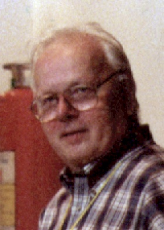

<p class="course-title-kicker">CS103 · Lecture 20</p> # Virtual Functions and Polymorphism <p class="course-title-tagline">The object, not the reference, chooses the function</p> <p class="course-title-instructor">Dr. Debasish Pattanayak · <a href="https://drdebmath.github.io">drdebmath.github.io</a></p>
## Where Lecture 19 ended · Which function runs? A `SearchTree` is a `BinaryTree` (Lecture 19), so `grow(BinaryTree& t)` accepts it. Inside `grow`, the base class operation ran and broke the invariant: `contains(99)` gave `0`. A derived function with the same name only **hides** the base one. Through a `BinaryTree&`, the base version still runs. **Today's question.** Can the object choose its own function? Plan: virtual functions, late binding, abstract classes, virtual destructors, and a factory function.
## Virtual functions · The object chooses the function ~~~cpp class BinaryTree { public: virtual void add(int v); // any tree: a new leftmost leaf protected: std::unique_ptr<Node> root; // also: size(), a virtual destructor }; class SearchTree : public BinaryTree { // invariant: smaller left, larger right public: void add(int v) override; // ordered: keeps the invariant bool contains(int v) const; }; void grow(BinaryTree& t) { t.add(99); } // which add()? int main() { SearchTree t; for (int v : {50, 30, 70}) t.add(v); grow(t); std::cout << "size " << t.size() << ", contains(99) " << t.contains(99) << '\n'; } // with virtual: size 4, contains(99) 1 · without virtual: contains(99) 0 ~~~ <figure class="course-stepper" data-course-stepper> <svg class="course-array-address-figure course-l20virt-figure" viewBox="0 0 900 380" role="img" aria-label="A step-by-step trace of lecture-20-virtual-add.cpp in 7 frames. The object SearchTree t is a dashed outer box containing a BinaryTree part with root and the tree nodes. Frame 1: t.add(50), t.add(30) and t.add(70) build the tree with 50 at the root, 30 on the left and 70 on the right; SearchTree::add keeps the invariant smaller left, larger right. Frame 2: grow(t) is called and the parameter BinaryTree& t refers to the same SearchTree object. Frame 3: t.add(99) inside grow; add is virtual, so the choice is made at run time from the object, and since the object is a SearchTree, SearchTree::add runs. Frame 4: 99 is greater than 50 so go right, 99 is greater than 70 so 99 becomes the right child of 70 and the invariant holds. Frame 5: t.contains(99) walks 50, 70, 99 and returns 1, and the output panel shows size 4, contains(99) 1. Frame 6: in the program without the word virtual, BinaryTree::add runs instead and attaches 99 as the left child of 30, drawn dashed red because 99 is greater than 30 but on the left, so the invariant is broken; the output is size 4, contains(99) 0. Frame 7: summary of the same call t.add(99): virtual means the object chooses add(), not virtual means the reference type chooses add()." xmlns="http://www.w3.org/2000/svg"> <style> .course-l20virt-figure text{font-family:ui-monospace,Menlo,Consolas,monospace;fill:currentColor} .course-l20virt-figure .cell{fill:none;stroke:currentColor;stroke-width:2} .course-l20virt-figure .cell.obj{fill:rgba(142,232,216,.18)} .course-l20virt-figure .cell.heap{fill:rgba(255,214,102,.22)} .course-l20virt-figure .cell.dead{fill:rgba(255,120,120,.22);stroke-dasharray:6 5} .course-l20virt-figure .hl{fill:rgba(110,170,255,.35);stroke:none} .course-l20virt-figure .arrow{fill:none;stroke:currentColor;stroke-width:2.5} .course-l20virt-figure .arrow.bad{stroke-dasharray:5 4} .course-l20virt-figure .hlline{fill:none;stroke:rgba(110,170,255,.45);stroke-width:12} .course-l20virt-figure .head{fill:currentColor} </style> <g data-step="0"><text x="20" y="28" font-size="18"><tspan font-weight="700">1 build</tspan><tspan opacity=".5"> · </tspan><tspan opacity=".5">2 call through BinaryTree&</tspan><tspan opacity=".5"> · </tspan><tspan opacity=".5">3 without virtual</tspan></text><rect class="cell" x="20" y="52" width="580" height="240" style="stroke-dasharray:3 6"/><text x="36" y="78" font-size="18" font-weight="700">SearchTree t</text><rect class="cell obj" x="36" y="88" width="548" height="196"/><text x="52" y="110" font-size="18" font-weight="700">BinaryTree part</text><rect class="cell heap" x="52" y="124" width="110" height="36"/><text x="107" y="149" font-size="18" text-anchor="middle">root</text><circle class="cell obj" cx="390" cy="142" r="18"/><text x="390" y="148" font-size="16" text-anchor="middle">50</text><circle class="cell obj" cx="310" cy="196" r="18"/><text x="310" y="202" font-size="16" text-anchor="middle">30</text><circle class="hl" cx="470" cy="196" r="26"/><circle class="cell obj" cx="470" cy="196" r="18"/><text x="470" y="202" font-size="16" text-anchor="middle">70</text><line class="arrow" x1="375.1" y1="152.1" x2="334.0" y2="179.8"/><polygon class="head" points="324.9,185.9 331.2,175.6 336.8,183.9"/><line class="arrow" x1="404.9" y1="152.1" x2="446.0" y2="179.8"/><polygon class="head" points="455.1,185.9 443.2,183.9 448.8,175.6"/><line class="arrow" x1="162.0" y1="142.0" x2="361.0" y2="142.0"/><polygon class="head" points="372.0,142.0 361.0,147.0 361.0,137.0"/><text x="52" y="200" font-size="16">SearchTree::add keeps</text><text x="52" y="222" font-size="16">the invariant: smaller</text><text x="52" y="244" font-size="16">left, larger right</text><rect class="cell" x="620" y="52" width="260" height="240"/><text x="636" y="80" font-size="18" font-weight="700">output</text><text x="450" y="336" font-size="18" text-anchor="middle" font-weight="700">SearchTree t; t.add(50); t.add(30); t.add(70);</text><text x="450" y="362" font-size="16" text-anchor="middle">add() puts 50 at root, then 30 on the left and 70 on the right: the invariant holds</text></g> <g data-step="1"><text x="20" y="28" font-size="18"><tspan opacity=".5">1 build</tspan><tspan opacity=".5"> · </tspan><tspan font-weight="700">2 call through BinaryTree&</tspan><tspan opacity=".5"> · </tspan><tspan opacity=".5">3 without virtual</tspan></text><rect class="hl" x="16" y="48" width="588" height="248"/><rect class="cell" x="20" y="52" width="580" height="240" style="stroke-dasharray:3 6"/><text x="36" y="78" font-size="18" font-weight="700">SearchTree t</text><rect class="cell obj" x="36" y="88" width="548" height="196"/><text x="52" y="110" font-size="18" font-weight="700">BinaryTree part</text><rect class="cell heap" x="52" y="124" width="110" height="36"/><text x="107" y="149" font-size="18" text-anchor="middle">root</text><circle class="cell obj" cx="390" cy="142" r="18"/><text x="390" y="148" font-size="16" text-anchor="middle">50</text><circle class="cell obj" cx="310" cy="196" r="18"/><text x="310" y="202" font-size="16" text-anchor="middle">30</text><circle class="cell obj" cx="470" cy="196" r="18"/><text x="470" y="202" font-size="16" text-anchor="middle">70</text><line class="arrow" x1="375.1" y1="152.1" x2="334.0" y2="179.8"/><polygon class="head" points="324.9,185.9 331.2,175.6 336.8,183.9"/><line class="arrow" x1="404.9" y1="152.1" x2="446.0" y2="179.8"/><polygon class="head" points="455.1,185.9 443.2,183.9 448.8,175.6"/><line class="arrow" x1="162.0" y1="142.0" x2="361.0" y2="142.0"/><polygon class="head" points="372.0,142.0 361.0,147.0 361.0,137.0"/><rect class="cell" x="60" y="170" width="140" height="30"/><text x="130" y="191" font-size="16" text-anchor="middle">BinaryTree& t</text><text x="52" y="226" font-size="16">t refers to the same</text><text x="52" y="248" font-size="16">SearchTree object</text><rect class="cell" x="620" y="52" width="260" height="240"/><text x="636" y="80" font-size="18" font-weight="700">output</text><text x="450" y="336" font-size="18" text-anchor="middle" font-weight="700">grow(t); // void grow(BinaryTree& t)</text><text x="450" y="362" font-size="16" text-anchor="middle">The parameter is a reference to a BinaryTree; it refers to the SearchTree object t</text></g> <g data-step="2"><text x="20" y="28" font-size="18"><tspan opacity=".5">1 build</tspan><tspan opacity=".5"> · </tspan><tspan font-weight="700">2 call through BinaryTree&</tspan><tspan opacity=".5"> · </tspan><tspan opacity=".5">3 without virtual</tspan></text><rect class="cell" x="20" y="52" width="580" height="240" style="stroke-dasharray:3 6"/><text x="36" y="78" font-size="18" font-weight="700">SearchTree t</text><rect class="cell obj" x="36" y="88" width="548" height="196"/><text x="52" y="110" font-size="18" font-weight="700">BinaryTree part</text><rect class="cell heap" x="52" y="124" width="110" height="36"/><text x="107" y="149" font-size="18" text-anchor="middle">root</text><circle class="cell obj" cx="390" cy="142" r="18"/><text x="390" y="148" font-size="16" text-anchor="middle">50</text><circle class="cell obj" cx="310" cy="196" r="18"/><text x="310" y="202" font-size="16" text-anchor="middle">30</text><circle class="cell obj" cx="470" cy="196" r="18"/><text x="470" y="202" font-size="16" text-anchor="middle">70</text><line class="arrow" x1="375.1" y1="152.1" x2="334.0" y2="179.8"/><polygon class="head" points="324.9,185.9 331.2,175.6 336.8,183.9"/><line class="arrow" x1="404.9" y1="152.1" x2="446.0" y2="179.8"/><polygon class="head" points="455.1,185.9 443.2,183.9 448.8,175.6"/><line class="arrow" x1="162.0" y1="142.0" x2="361.0" y2="142.0"/><polygon class="head" points="372.0,142.0 361.0,147.0 361.0,137.0"/><rect class="cell" x="60" y="170" width="140" height="30"/><text x="130" y="191" font-size="16" text-anchor="middle">BinaryTree& t</text><rect class="hl" x="48" y="206" width="170" height="26"/><text x="56" y="225" font-size="16" font-weight="700">SearchTree::add</text><text x="52" y="256" font-size="16">chosen at run time</text><text x="52" y="276" font-size="16">from the object</text><rect class="cell" x="620" y="52" width="260" height="240"/><text x="636" y="80" font-size="18" font-weight="700">output</text><text x="450" y="336" font-size="18" text-anchor="middle" font-weight="700">t.add(99); // inside grow</text><text x="450" y="362" font-size="16" text-anchor="middle">add is virtual and the object is a SearchTree, so SearchTree::add runs</text></g> <g data-step="3"><text x="20" y="28" font-size="18"><tspan opacity=".5">1 build</tspan><tspan opacity=".5"> · </tspan><tspan font-weight="700">2 call through BinaryTree&</tspan><tspan opacity=".5"> · </tspan><tspan opacity=".5">3 without virtual</tspan></text><rect class="cell" x="20" y="52" width="580" height="240" style="stroke-dasharray:3 6"/><text x="36" y="78" font-size="18" font-weight="700">SearchTree t</text><rect class="cell obj" x="36" y="88" width="548" height="196"/><text x="52" y="110" font-size="18" font-weight="700">BinaryTree part</text><rect class="cell heap" x="52" y="124" width="110" height="36"/><text x="107" y="149" font-size="18" text-anchor="middle">root</text><circle class="cell obj" cx="390" cy="142" r="18"/><text x="390" y="148" font-size="16" text-anchor="middle">50</text><circle class="cell obj" cx="310" cy="196" r="18"/><text x="310" y="202" font-size="16" text-anchor="middle">30</text><circle class="cell obj" cx="470" cy="196" r="18"/><text x="470" y="202" font-size="16" text-anchor="middle">70</text><circle class="hl" cx="530" cy="250" r="26"/><circle class="cell obj" cx="530" cy="250" r="18"/><text x="530" y="256" font-size="16" text-anchor="middle">99</text><line class="arrow" x1="375.1" y1="152.1" x2="334.0" y2="179.8"/><polygon class="head" points="324.9,185.9 331.2,175.6 336.8,183.9"/><line class="arrow" x1="404.9" y1="152.1" x2="446.0" y2="179.8"/><polygon class="head" points="455.1,185.9 443.2,183.9 448.8,175.6"/><line class="arrow" x1="483.4" y1="208.0" x2="508.4" y2="230.6"/><polygon class="head" points="516.6,238.0 505.1,234.3 511.8,226.9"/><line class="arrow" x1="162.0" y1="142.0" x2="361.0" y2="142.0"/><polygon class="head" points="372.0,142.0 361.0,147.0 361.0,137.0"/><rect class="cell" x="60" y="170" width="140" height="30"/><text x="130" y="191" font-size="16" text-anchor="middle">BinaryTree& t</text><rect class="hl" x="48" y="206" width="170" height="26"/><text x="56" y="225" font-size="16" font-weight="700">SearchTree::add</text><text x="52" y="256" font-size="16">99 > 50: go right</text><text x="52" y="276" font-size="16">99 > 70: go right</text><rect class="cell" x="620" y="52" width="260" height="240"/><text x="636" y="80" font-size="18" font-weight="700">output</text><text x="450" y="336" font-size="18" text-anchor="middle" font-weight="700">t.add(99); // 99 > 50, 99 > 70</text><text x="450" y="362" font-size="16" text-anchor="middle">99 becomes the right child of 70; the invariant still holds</text></g> <g data-step="4"><text x="20" y="28" font-size="18"><tspan opacity=".5">1 build</tspan><tspan opacity=".5"> · </tspan><tspan font-weight="700">2 call through BinaryTree&</tspan><tspan opacity=".5"> · </tspan><tspan opacity=".5">3 without virtual</tspan></text><rect class="cell" x="20" y="52" width="580" height="240" style="stroke-dasharray:3 6"/><text x="36" y="78" font-size="18" font-weight="700">SearchTree t</text><rect class="cell obj" x="36" y="88" width="548" height="196"/><text x="52" y="110" font-size="18" font-weight="700">BinaryTree part</text><rect class="cell heap" x="52" y="124" width="110" height="36"/><text x="107" y="149" font-size="18" text-anchor="middle">root</text><circle class="hl" cx="390" cy="142" r="26"/><circle class="cell obj" cx="390" cy="142" r="18"/><text x="390" y="148" font-size="16" text-anchor="middle">50</text><circle class="cell obj" cx="310" cy="196" r="18"/><text x="310" y="202" font-size="16" text-anchor="middle">30</text><circle class="hl" cx="470" cy="196" r="26"/><circle class="cell obj" cx="470" cy="196" r="18"/><text x="470" y="202" font-size="16" text-anchor="middle">70</text><circle class="hl" cx="530" cy="250" r="26"/><circle class="cell obj" cx="530" cy="250" r="18"/><text x="530" y="256" font-size="16" text-anchor="middle">99</text><line class="arrow" x1="375.1" y1="152.1" x2="334.0" y2="179.8"/><polygon class="head" points="324.9,185.9 331.2,175.6 336.8,183.9"/><line class="arrow" x1="404.9" y1="152.1" x2="446.0" y2="179.8"/><polygon class="head" points="455.1,185.9 443.2,183.9 448.8,175.6"/><line class="arrow" x1="483.4" y1="208.0" x2="508.4" y2="230.6"/><polygon class="head" points="516.6,238.0 505.1,234.3 511.8,226.9"/><line class="arrow" x1="162.0" y1="142.0" x2="361.0" y2="142.0"/><polygon class="head" points="372.0,142.0 361.0,147.0 361.0,137.0"/><rect class="cell" x="60" y="170" width="140" height="30"/><text x="130" y="191" font-size="16" text-anchor="middle">BinaryTree& t</text><text x="52" y="226" font-size="16">contains(99) walks</text><text x="52" y="248" font-size="16">50, 70, 99</text><rect class="cell" x="620" y="52" width="260" height="240"/><text x="636" y="80" font-size="18" font-weight="700">output</text><text x="636" y="104" font-size="16">size 4, contains(99) 1</text><text x="450" y="336" font-size="18" text-anchor="middle" font-weight="700">t.contains(99) // returns 1</text><text x="450" y="362" font-size="16" text-anchor="middle">contains(99) walks 50, 70, 99 and finds it; the program prints size 4, contains(99) 1</text></g> <g data-step="5"><text x="20" y="28" font-size="18"><tspan opacity=".5">1 build</tspan><tspan opacity=".5"> · </tspan><tspan opacity=".5">2 call through BinaryTree&</tspan><tspan opacity=".5"> · </tspan><tspan font-weight="700">3 without virtual</tspan></text><rect class="cell" x="20" y="52" width="580" height="240" style="stroke-dasharray:3 6"/><text x="36" y="78" font-size="18" font-weight="700">SearchTree t</text><text x="584" y="78" font-size="16" text-anchor="end" font-weight="700">program without virtual</text><rect class="cell obj" x="36" y="88" width="548" height="196"/><text x="52" y="110" font-size="18" font-weight="700">BinaryTree part</text><rect class="cell heap" x="52" y="124" width="110" height="36"/><text x="107" y="149" font-size="18" text-anchor="middle">root</text><circle class="cell obj" cx="390" cy="142" r="18"/><text x="390" y="148" font-size="16" text-anchor="middle">50</text><circle class="cell obj" cx="310" cy="196" r="18"/><text x="310" y="202" font-size="16" text-anchor="middle">30</text><circle class="cell obj" cx="470" cy="196" r="18"/><text x="470" y="202" font-size="16" text-anchor="middle">70</text><circle class="hl" cx="250" cy="250" r="26"/><circle class="cell dead" cx="250" cy="250" r="18"/><text x="250" y="256" font-size="16" text-anchor="middle">99</text><line class="arrow" x1="375.1" y1="152.1" x2="334.0" y2="179.8"/><polygon class="head" points="324.9,185.9 331.2,175.6 336.8,183.9"/><line class="arrow" x1="404.9" y1="152.1" x2="446.0" y2="179.8"/><polygon class="head" points="455.1,185.9 443.2,183.9 448.8,175.6"/><line class="arrow bad" x1="296.6" y1="208.0" x2="271.6" y2="230.6"/><polygon class="head" points="263.4,238.0 268.2,226.9 274.9,234.3"/><line class="arrow" x1="162.0" y1="142.0" x2="361.0" y2="142.0"/><polygon class="head" points="372.0,142.0 361.0,147.0 361.0,137.0"/><rect class="cell" x="60" y="170" width="140" height="30"/><text x="130" y="191" font-size="16" text-anchor="middle">BinaryTree& t</text><text x="52" y="226" font-size="16">BinaryTree::add</text><text x="52" y="248" font-size="16">runs, not virtual</text><rect class="cell" x="620" y="52" width="260" height="240"/><text x="636" y="80" font-size="18" font-weight="700">output</text><text x="636" y="104" font-size="16">size 4, contains(99) 0</text><text x="450" y="336" font-size="18" text-anchor="middle" font-weight="700">t.add(99); // add is not virtual</text><text x="450" y="362" font-size="16" text-anchor="middle">BinaryTree::add puts 99 left of 30 although 99 > 30: the invariant is broken</text></g> <g data-step="6"><text x="20" y="28" font-size="18"><tspan opacity=".5">1 build</tspan><tspan opacity=".5"> · </tspan><tspan opacity=".5">2 call through BinaryTree&</tspan><tspan opacity=".5"> · </tspan><tspan font-weight="700">3 without virtual</tspan></text><rect class="cell obj" x="20" y="52" width="284" height="240"/><text x="36" y="80" font-size="18" font-weight="700">virtual</text><text x="36" y="110" font-size="16">t.add(99);</text><text x="36" y="134" font-size="16">the object chooses add()</text><text x="36" y="158" font-size="16">SearchTree::add runs</text><text x="36" y="182" font-size="16">invariant holds</text><text x="36" y="206" font-size="16">contains(99) 1</text><rect class="cell dead" x="316" y="52" width="284" height="240"/><text x="332" y="80" font-size="18" font-weight="700">not virtual</text><text x="332" y="110" font-size="16">t.add(99);</text><text x="332" y="134" font-size="16">the reference type</text><text x="332" y="158" font-size="16">chooses add()</text><text x="332" y="182" font-size="16">BinaryTree::add runs</text><text x="332" y="206" font-size="16">invariant broken</text><text x="332" y="230" font-size="16">contains(99) 0</text><rect class="cell" x="620" y="52" width="260" height="240"/><text x="636" y="80" font-size="18" font-weight="700">output</text><text x="636" y="104" font-size="16">size 4, contains(99) 1</text><text x="636" y="126" font-size="16">size 4, contains(99) 0</text><text x="450" y="336" font-size="18" text-anchor="middle" font-weight="700">t.add(99); // the same call both times</text><text x="450" y="362" font-size="16" text-anchor="middle">Only the word virtual changes which add() runs: the object or the reference type decides</text></g> </svg> </figure>
## Virtual functions: the general form | Part | Meaning | | --- | --- | | `virtual void f();` in `Base` | A **virtual function**: a derived class may **override** it. | | `void f() override;` in `Derived` | Overrides `Base::f`; the compiler checks that the name and parameters match. | | `Base& r = d; r.f();` | **Late binding**: the function is chosen at run time from the object, here `Derived::f`. | | `virtual double area() const = 0;` | A **pure virtual function**: no definition in the base class; a derived class must override it. | | **Abstract class** | A class with a pure virtual function; no object of it can be created. | | `virtual ~Base() = default;` | A **virtual destructor**: `delete` through a `Base*` runs the derived destructor first. |
## Late binding · Dynamic dispatch at run time ~~~cpp class Base { public: void early() const { std::cout << "Base::early\n"; } // not virtual virtual void late() const { std::cout << "Base::late\n"; } // virtual virtual ~Base() = default; }; class Derived : public Base { public: void early() const { std::cout << "Derived::early\n"; } // hides void late() const override { std::cout << "Derived::late\n"; } }; int main() { Derived d; Base& r = d; // reference type Base; object: a Derived r.early(); // Base::early early binding: from the type of r r.late(); // Derived::late late binding: from the object } ~~~ <figure class="course-stepper" data-course-stepper> <svg class="course-array-address-figure course-l20bind-figure" viewBox="0 0 900 380" role="img" aria-label="A step-by-step trace of lecture-20-late-binding.cpp in 5 frames. The object Derived d has a Base part holding one hidden pointer to the table of virtual functions of Derived; the table has one row, late to Derived::late, and its layout is implementation-specific. Frame 1: Derived d is created and holds a pointer to the table of its own class, Derived. Frame 2: Base& r = d makes r refer to d; the type of r is Base but the object is a Derived. Frame 3: r.early() calls a function that is not virtual, so the compiler chooses Base::early at compile time from the type of r (early binding); the table is not used and is dimmed; the output is Base::early. Frame 4: r.late() calls a virtual function, so at run time the call follows the pointer in d to the table of Derived and runs Derived::late (late binding); the pointer and the table row are highlighted; the output adds Derived::late. Frame 5: summary: not virtual means early binding chosen by the compiler from the reference type; virtual means late binding chosen at run time from the object." xmlns="http://www.w3.org/2000/svg"> <style> .course-l20bind-figure text{font-family:ui-monospace,Menlo,Consolas,monospace;fill:currentColor} .course-l20bind-figure .cell{fill:none;stroke:currentColor;stroke-width:2} .course-l20bind-figure .cell.obj{fill:rgba(142,232,216,.18)} .course-l20bind-figure .cell.heap{fill:rgba(255,214,102,.22)} .course-l20bind-figure .cell.dead{fill:rgba(255,120,120,.22);stroke-dasharray:6 5} .course-l20bind-figure .hl{fill:rgba(110,170,255,.35);stroke:none} .course-l20bind-figure .arrow{fill:none;stroke:currentColor;stroke-width:2.5} .course-l20bind-figure .arrow.bad{stroke-dasharray:5 4} .course-l20bind-figure .hlline{fill:none;stroke:rgba(110,170,255,.45);stroke-width:12} .course-l20bind-figure .head{fill:currentColor} </style> <g data-step="0"><text x="20" y="28" font-size="18"><tspan font-weight="700">1 the object</tspan><tspan opacity=".5"> · </tspan><tspan opacity=".5">2 early binding</tspan><tspan opacity=".5"> · </tspan><tspan opacity=".5">3 late binding</tspan></text><rect class="cell" x="20" y="52" width="230" height="240" style="stroke-dasharray:3 6"/><text x="36" y="78" font-size="18" font-weight="700">Derived d</text><rect class="cell obj" x="36" y="88" width="198" height="100"/><text x="52" y="110" font-size="18" font-weight="700">Base part</text><rect class="cell heap" x="48" y="124" width="174" height="36"/><text x="135" y="147" font-size="16" text-anchor="middle">pointer to table</text><rect class="cell" x="290" y="52" width="300" height="240"/><text x="306" y="78" font-size="18" font-weight="700">Derived's table of</text><text x="306" y="100" font-size="18" font-weight="700">virtual functions</text><rect class="cell heap" x="306" y="124" width="268" height="36"/><text x="440" y="147" font-size="16" text-anchor="middle">late → Derived::late</text><text x="306" y="184" font-size="16">(implementation-specific)</text><line class="arrow" x1="222.0" y1="142.0" x2="293.0" y2="142.0"/><polygon class="head" points="304.0,142.0 293.0,147.0 293.0,137.0"/><rect class="cell" x="620" y="52" width="260" height="240"/><text x="636" y="80" font-size="18" font-weight="700">output</text><text x="450" y="336" font-size="18" text-anchor="middle" font-weight="700">Derived d;</text><text x="450" y="362" font-size="16" text-anchor="middle">d holds a pointer to the table of virtual functions of its own class, Derived</text></g> <g data-step="1"><text x="20" y="28" font-size="18"><tspan opacity=".5">1 the object</tspan><tspan opacity=".5"> · </tspan><tspan font-weight="700">2 early binding</tspan><tspan opacity=".5"> · </tspan><tspan opacity=".5">3 late binding</tspan></text><rect class="hl" x="16" y="48" width="238" height="248"/><rect class="cell" x="20" y="52" width="230" height="240" style="stroke-dasharray:3 6"/><text x="36" y="78" font-size="18" font-weight="700">Derived d</text><rect class="cell obj" x="36" y="88" width="198" height="100"/><text x="52" y="110" font-size="18" font-weight="700">Base part</text><rect class="cell heap" x="48" y="124" width="174" height="36"/><text x="135" y="147" font-size="16" text-anchor="middle">pointer to table</text><rect class="cell" x="56" y="228" width="130" height="32"/><text x="121" y="250" font-size="16" text-anchor="middle">Base& r</text><line class="arrow" x1="121.0" y1="228.0" x2="121.0" y2="201.0"/><polygon class="head" points="121.0,190.0 126.0,201.0 116.0,201.0"/><rect class="cell" x="290" y="52" width="300" height="240"/><text x="306" y="78" font-size="18" font-weight="700">Derived's table of</text><text x="306" y="100" font-size="18" font-weight="700">virtual functions</text><rect class="cell heap" x="306" y="124" width="268" height="36"/><text x="440" y="147" font-size="16" text-anchor="middle">late → Derived::late</text><text x="306" y="184" font-size="16">(implementation-specific)</text><line class="arrow" x1="222.0" y1="142.0" x2="293.0" y2="142.0"/><polygon class="head" points="304.0,142.0 293.0,147.0 293.0,137.0"/><rect class="cell" x="620" y="52" width="260" height="240"/><text x="636" y="80" font-size="18" font-weight="700">output</text><text x="450" y="336" font-size="18" text-anchor="middle" font-weight="700">Base& r = d;</text><text x="450" y="362" font-size="16" text-anchor="middle">r refers to d: the type of r is Base, but the object is a Derived</text></g> <g data-step="2"><text x="20" y="28" font-size="18"><tspan opacity=".5">1 the object</tspan><tspan opacity=".5"> · </tspan><tspan font-weight="700">2 early binding</tspan><tspan opacity=".5"> · </tspan><tspan opacity=".5">3 late binding</tspan></text><rect class="cell" x="20" y="52" width="230" height="240" style="stroke-dasharray:3 6"/><text x="36" y="78" font-size="18" font-weight="700">Derived d</text><rect class="cell obj" x="36" y="88" width="198" height="100"/><text x="52" y="110" font-size="18" font-weight="700">Base part</text><rect class="cell heap" x="48" y="124" width="174" height="36"/><text x="135" y="147" font-size="16" text-anchor="middle">pointer to table</text><rect class="cell" x="56" y="228" width="130" height="32"/><text x="121" y="250" font-size="16" text-anchor="middle">Base& r</text><line class="arrow" x1="121.0" y1="228.0" x2="121.0" y2="201.0"/><polygon class="head" points="121.0,190.0 126.0,201.0 116.0,201.0"/><g opacity=".35"><rect class="cell" x="290" y="52" width="300" height="240"/><text x="306" y="78" font-size="18" font-weight="700">Derived's table of</text><text x="306" y="100" font-size="18" font-weight="700">virtual functions</text><rect class="cell heap" x="306" y="124" width="268" height="36"/><text x="440" y="147" font-size="16" text-anchor="middle">late → Derived::late</text><text x="306" y="184" font-size="16">(implementation-specific)</text><line class="arrow" x1="222.0" y1="142.0" x2="293.0" y2="142.0"/><polygon class="head" points="304.0,142.0 293.0,147.0 293.0,137.0"/></g><text x="306" y="222" font-size="16">compile time, from the</text><text x="306" y="242" font-size="16">type Base of r</text><rect class="hl" x="302" y="254" width="200" height="28"/><text x="310" y="274" font-size="16" font-weight="700">Base::early</text><rect class="cell" x="620" y="52" width="260" height="240"/><text x="636" y="80" font-size="18" font-weight="700">output</text><text x="636" y="104" font-size="16">Base::early</text><text x="450" y="336" font-size="18" text-anchor="middle" font-weight="700">r.early(); // not virtual</text><text x="450" y="362" font-size="16" text-anchor="middle">early is not virtual: the compiler chooses Base::early from the type of r</text></g> <g data-step="3"><text x="20" y="28" font-size="18"><tspan opacity=".5">1 the object</tspan><tspan opacity=".5"> · </tspan><tspan opacity=".5">2 early binding</tspan><tspan opacity=".5"> · </tspan><tspan font-weight="700">3 late binding</tspan></text><rect class="cell" x="20" y="52" width="230" height="240" style="stroke-dasharray:3 6"/><text x="36" y="78" font-size="18" font-weight="700">Derived d</text><rect class="cell obj" x="36" y="88" width="198" height="100"/><text x="52" y="110" font-size="18" font-weight="700">Base part</text><rect class="cell heap" x="48" y="124" width="174" height="36"/><text x="135" y="147" font-size="16" text-anchor="middle">pointer to table</text><rect class="cell" x="56" y="228" width="130" height="32"/><text x="121" y="250" font-size="16" text-anchor="middle">Base& r</text><line class="arrow" x1="121.0" y1="228.0" x2="121.0" y2="201.0"/><polygon class="head" points="121.0,190.0 126.0,201.0 116.0,201.0"/><rect class="hl" x="302" y="120" width="276" height="44"/><line class="hlline" x1="222" y1="142" x2="300" y2="142"/><rect class="cell" x="290" y="52" width="300" height="240"/><text x="306" y="78" font-size="18" font-weight="700">Derived's table of</text><text x="306" y="100" font-size="18" font-weight="700">virtual functions</text><rect class="cell heap" x="306" y="124" width="268" height="36"/><text x="440" y="147" font-size="16" text-anchor="middle">late → Derived::late</text><text x="306" y="184" font-size="16">(implementation-specific)</text><line class="arrow" x1="222.0" y1="142.0" x2="293.0" y2="142.0" style="stroke-width:3.5"/><polygon class="head" points="304.0,142.0 293.0,147.0 293.0,137.0"/><text x="306" y="222" font-size="16">run time, from the</text><text x="306" y="242" font-size="16">object d</text><rect class="hl" x="302" y="254" width="200" height="28"/><text x="310" y="274" font-size="16" font-weight="700">Derived::late</text><rect class="cell" x="620" y="52" width="260" height="240"/><text x="636" y="80" font-size="18" font-weight="700">output</text><text x="636" y="104" font-size="16">Base::early</text><text x="636" y="126" font-size="16">Derived::late</text><text x="450" y="336" font-size="18" text-anchor="middle" font-weight="700">r.late(); // virtual</text><text x="450" y="362" font-size="16" text-anchor="middle">late is virtual: the call follows the pointer in d to Derived::late (late binding)</text></g> <g data-step="4"><text x="20" y="28" font-size="18"><tspan opacity=".5">1 the object</tspan><tspan opacity=".5"> · </tspan><tspan opacity=".5">2 early binding</tspan><tspan opacity=".5"> · </tspan><tspan font-weight="700">3 late binding</tspan></text><rect class="cell " x="20" y="52" width="284" height="240"/><text x="36" y="80" font-size="18" font-weight="700">not virtual</text><text x="36" y="110" font-size="16">r.early();</text><text x="36" y="134" font-size="16">early binding</text><text x="36" y="158" font-size="16">chosen by the compiler</text><text x="36" y="182" font-size="16">from the type of r</text><text x="36" y="206" font-size="16">prints Base::early</text><rect class="cell obj" x="316" y="52" width="284" height="240"/><text x="332" y="80" font-size="18" font-weight="700">virtual</text><text x="332" y="110" font-size="16">r.late();</text><text x="332" y="134" font-size="16">late binding</text><text x="332" y="158" font-size="16">chosen at run time</text><text x="332" y="182" font-size="16">from the object</text><text x="332" y="206" font-size="16">prints Derived::late</text><rect class="cell" x="620" y="52" width="260" height="240"/><text x="636" y="80" font-size="18" font-weight="700">output</text><text x="636" y="104" font-size="16">Base::early</text><text x="636" y="126" font-size="16">Derived::late</text><text x="450" y="336" font-size="18" text-anchor="middle" font-weight="700">r.early(); r.late();</text><text x="450" y="362" font-size="16" text-anchor="middle">The same reference r, two kinds of call: the word virtual selects late binding</text></g> </svg> </figure>
## Poll 1: What does main print? <div class="course-poll-layout"> <div> ~~~cpp class A { public: void f() const { std::cout << "A"; } virtual void g() const { std::cout << "A"; } virtual ~A() = default; }; class B : public A { public: void f() const { std::cout << "B"; } void g() const override { std::cout << "B"; } }; int main() { B b; A& r = b; r.f(); r.g(); } ~~~ </div> <div> <figure class="course-slido-qr"><figcaption>📊 sli.do · #1395427</figcaption></figure> **A)** `AA` · **B)** `AB`<br>**C)** `BA` · **D)** `BB` </div> </div>
## Abstract classes · A pure virtual function is a promise ~~~cpp class Shape { // abstract class public: virtual double area() const = 0; // pure virtual function virtual std::string name() const = 0; virtual ~Shape() = default; }; class Square : public Shape { // Circle is written the same way public: explicit Square(double s) : side(s) {} double area() const override { return side * side; } std::string name() const override { return "square"; } private: double side; }; void report(const Shape& s) { // written once, for every shape std::cout << s.name() << " area " << s.area() << '\n'; } // report(sq): square area 16 · report(c): circle area 3.14159 // Shape s; error: variable type 'Shape' is an abstract class ~~~
## Abstract classes step by step <figure class="course-stepper" data-course-stepper> <svg class="course-array-address-figure course-l20shape-figure" viewBox="0 0 900 380" role="img" aria-label="A step-by-step trace of the abstract class Shape and two derived classes, in 6 frames. Shape is drawn as a box with two dashed slots, area() = 0 and name() = 0, which have no definition. Frame 1: class Shape declares two pure virtual functions without defining them, so Shape is an interface. Frame 2: Square sq(4.0) creates an object with data member side = 4; Square overrides both functions, drawn as solid slots Square::area and Square::name. Frame 3: report(sq) binds the parameter const Shape& s to sq, and s.name() runs Square::name, giving square. Frame 4: s.area() runs Square::area, 4 times 4 equals 16, and the output is square area 16. Frame 5: report(c) runs the same function, now s refers to the Circle object c with radius 1, so Circle::name and Circle::area run and the output adds circle area 3.14159. Frame 6: Shape s; is a compile error drawn dashed red, variable type Shape is an abstract class, because the pure virtual functions have no definition and no Shape object can exist." xmlns="http://www.w3.org/2000/svg"> <style> .course-l20shape-figure text{font-family:ui-monospace,Menlo,Consolas,monospace;fill:currentColor} .course-l20shape-figure .cell{fill:none;stroke:currentColor;stroke-width:2} .course-l20shape-figure .cell.obj{fill:rgba(142,232,216,.18)} .course-l20shape-figure .cell.heap{fill:rgba(255,214,102,.22)} .course-l20shape-figure .cell.dead{fill:rgba(255,120,120,.22);stroke-dasharray:6 5} .course-l20shape-figure .cell.pend{stroke-dasharray:3 6} .course-l20shape-figure .hl{fill:rgba(110,170,255,.35);stroke:none} .course-l20shape-figure .arrow{fill:none;stroke:currentColor;stroke-width:2.5} .course-l20shape-figure .head{fill:currentColor} </style> <g data-step="0"><text x="20" y="28" font-size="18"><tspan font-weight="700">1 the interface</tspan><tspan opacity=".5"> · </tspan><tspan opacity=".5">2 derived objects</tspan><tspan opacity=".5"> · </tspan><tspan opacity=".5">3 no Shape object</tspan></text><rect class="cell obj" x="20" y="46" width="300" height="96"/><text x="36" y="70" font-size="18" font-weight="700">Shape (abstract class)</text><rect class="cell pend" x="36" y="78" width="268" height="26"/><text x="46" y="97" font-size="16">area() = 0</text><rect class="cell pend" x="36" y="112" width="268" height="26"/><text x="46" y="131" font-size="16">name() = 0</text><text x="340" y="80" font-size="16">interface: the two</text><text x="340" y="102" font-size="16">functions are declared,</text><text x="340" y="124" font-size="16">not defined</text><text x="36" y="230" font-size="16">no objects yet</text><rect class="cell" x="620" y="46" width="260" height="246"/><text x="636" y="74" font-size="18" font-weight="700">output</text><text x="450" y="336" font-size="18" font-weight="700" text-anchor="middle">class Shape</text><text x="450" y="362" font-size="16" text-anchor="middle">Two pure virtual functions: declared, not defined; Shape is an interface</text></g> <g data-step="1"><text x="20" y="28" font-size="18"><tspan opacity=".5">1 the interface</tspan><tspan opacity=".5"> · </tspan><tspan font-weight="700">2 derived objects</tspan><tspan opacity=".5"> · </tspan><tspan opacity=".5">3 no Shape object</tspan></text><rect class="cell obj" x="20" y="46" width="300" height="96"/><text x="36" y="70" font-size="18" font-weight="700">Shape (abstract class)</text><rect class="cell pend" x="36" y="78" width="268" height="26"/><text x="46" y="97" font-size="16">area() = 0</text><rect class="cell pend" x="36" y="112" width="268" height="26"/><text x="46" y="131" font-size="16">name() = 0</text><rect class="cell obj" x="20" y="160" width="280" height="132"/><text x="36" y="182" font-size="18" font-weight="700">Square sq</text><rect class="cell heap" x="36" y="190" width="248" height="28"/><text x="46" y="210" font-size="16">side = 4</text><rect class="cell obj" x="36" y="226" width="248" height="26"/><text x="46" y="245" font-size="16">Square::area</text><rect class="cell obj" x="36" y="256" width="248" height="26"/><text x="46" y="275" font-size="16">Square::name</text><text x="340" y="80" font-size="16">Square overrides</text><text x="340" y="102" font-size="16">both functions</text><rect class="cell" x="620" y="46" width="260" height="246"/><text x="636" y="74" font-size="18" font-weight="700">output</text><text x="450" y="336" font-size="18" font-weight="700" text-anchor="middle">Square sq(4.0);</text><text x="450" y="362" font-size="16" text-anchor="middle">sq has data member side = 4; Square defines area() and name()</text></g> <g data-step="2"><text x="20" y="28" font-size="18"><tspan opacity=".5">1 the interface</tspan><tspan opacity=".5"> · </tspan><tspan font-weight="700">2 derived objects</tspan><tspan opacity=".5"> · </tspan><tspan opacity=".5">3 no Shape object</tspan></text><rect class="cell obj" x="20" y="46" width="300" height="96"/><text x="36" y="70" font-size="18" font-weight="700">Shape (abstract class)</text><rect class="cell pend" x="36" y="78" width="268" height="26"/><text x="46" y="97" font-size="16">area() = 0</text><rect class="cell pend" x="36" y="112" width="268" height="26"/><text x="46" y="131" font-size="16">name() = 0</text><rect class="cell obj" x="20" y="160" width="280" height="132"/><text x="36" y="182" font-size="18" font-weight="700">Square sq</text><rect class="cell heap" x="36" y="190" width="248" height="28"/><text x="46" y="210" font-size="16">side = 4</text><rect class="cell obj" x="36" y="226" width="248" height="26"/><text x="46" y="245" font-size="16">Square::area</text><rect class="hl" x="32" y="252" width="256" height="34"/><rect class="cell obj" x="36" y="256" width="248" height="26"/><text x="46" y="275" font-size="16">Square::name</text><rect class="cell heap" x="340" y="56" width="250" height="40"/><text x="465" y="82" font-size="18" text-anchor="middle">s (const Shape&)</text><line class="arrow" x1="420" y1="96" x2="299.9" y2="155.1"/><polygon class="head" points="290,160 297.7,150.7 302.1,159.6"/><rect class="cell" x="620" y="46" width="260" height="246"/><text x="636" y="74" font-size="18" font-weight="700">output</text><text x="450" y="336" font-size="18" font-weight="700" text-anchor="middle">report(sq); // s.name()</text><text x="450" y="362" font-size="16" text-anchor="middle">const Shape& s refers to sq; s.name() runs Square::name, giving "square"</text></g> <g data-step="3"><text x="20" y="28" font-size="18"><tspan opacity=".5">1 the interface</tspan><tspan opacity=".5"> · </tspan><tspan font-weight="700">2 derived objects</tspan><tspan opacity=".5"> · </tspan><tspan opacity=".5">3 no Shape object</tspan></text><rect class="cell obj" x="20" y="46" width="300" height="96"/><text x="36" y="70" font-size="18" font-weight="700">Shape (abstract class)</text><rect class="cell pend" x="36" y="78" width="268" height="26"/><text x="46" y="97" font-size="16">area() = 0</text><rect class="cell pend" x="36" y="112" width="268" height="26"/><text x="46" y="131" font-size="16">name() = 0</text><rect class="cell obj" x="20" y="160" width="280" height="132"/><text x="36" y="182" font-size="18" font-weight="700">Square sq</text><rect class="cell heap" x="36" y="190" width="248" height="28"/><text x="46" y="210" font-size="16">side = 4</text><rect class="hl" x="32" y="222" width="256" height="34"/><rect class="cell obj" x="36" y="226" width="248" height="26"/><text x="46" y="245" font-size="16">Square::area</text><rect class="cell obj" x="36" y="256" width="248" height="26"/><text x="46" y="275" font-size="16">Square::name</text><text x="214" y="245" font-size="16">= 16</text><rect class="cell heap" x="340" y="56" width="250" height="40"/><text x="465" y="82" font-size="18" text-anchor="middle">s (const Shape&)</text><line class="arrow" x1="420" y1="96" x2="299.9" y2="155.1"/><polygon class="head" points="290,160 297.7,150.7 302.1,159.6"/><rect class="cell" x="620" y="46" width="260" height="246"/><text x="636" y="74" font-size="18" font-weight="700">output</text><text x="636" y="98" font-size="16">square area 16</text><text x="450" y="336" font-size="18" font-weight="700" text-anchor="middle">s.area()</text><text x="450" y="362" font-size="16" text-anchor="middle">s.area() runs Square::area: 4 × 4 = 16; the output is square area 16</text></g> <g data-step="4"><text x="20" y="28" font-size="18"><tspan opacity=".5">1 the interface</tspan><tspan opacity=".5"> · </tspan><tspan font-weight="700">2 derived objects</tspan><tspan opacity=".5"> · </tspan><tspan opacity=".5">3 no Shape object</tspan></text><rect class="cell obj" x="20" y="46" width="300" height="96"/><text x="36" y="70" font-size="18" font-weight="700">Shape (abstract class)</text><rect class="cell pend" x="36" y="78" width="268" height="26"/><text x="46" y="97" font-size="16">area() = 0</text><rect class="cell pend" x="36" y="112" width="268" height="26"/><text x="46" y="131" font-size="16">name() = 0</text><rect class="cell obj" x="20" y="160" width="280" height="132"/><text x="36" y="182" font-size="18" font-weight="700">Square sq</text><rect class="cell heap" x="36" y="190" width="248" height="28"/><text x="46" y="210" font-size="16">side = 4</text><rect class="cell obj" x="36" y="226" width="248" height="26"/><text x="46" y="245" font-size="16">Square::area</text><rect class="cell obj" x="36" y="256" width="248" height="26"/><text x="46" y="275" font-size="16">Square::name</text><rect class="cell obj" x="320" y="160" width="280" height="132"/><text x="336" y="182" font-size="18" font-weight="700">Circle c</text><rect class="cell heap" x="336" y="190" width="248" height="28"/><text x="346" y="210" font-size="16">radius = 1</text><rect class="hl" x="332" y="222" width="256" height="34"/><rect class="cell obj" x="336" y="226" width="248" height="26"/><text x="346" y="245" font-size="16">Circle::area</text><rect class="cell obj" x="336" y="256" width="248" height="26"/><text x="346" y="275" font-size="16">Circle::name</text><text x="470" y="245" font-size="16">= 3.14159</text><rect class="cell heap" x="340" y="56" width="250" height="40"/><text x="465" y="82" font-size="18" text-anchor="middle">s (const Shape&)</text><line class="arrow" x1="480" y1="96" x2="463.3" y2="149.5"/><polygon class="head" points="460,160 458.5,148.0 468.1,151.0"/><rect class="cell" x="620" y="46" width="260" height="246"/><text x="636" y="74" font-size="18" font-weight="700">output</text><text x="636" y="98" font-size="16">square area 16</text><text x="636" y="120" font-size="16">circle area 3.14159</text><text x="450" y="336" font-size="18" font-weight="700" text-anchor="middle">report(c);</text><text x="450" y="362" font-size="16" text-anchor="middle">Same function, now s refers to c: Circle::name and Circle::area run</text></g> <g data-step="5"><text x="20" y="28" font-size="18"><tspan opacity=".5">1 the interface</tspan><tspan opacity=".5"> · </tspan><tspan opacity=".5">2 derived objects</tspan><tspan opacity=".5"> · </tspan><tspan font-weight="700">3 no Shape object</tspan></text><rect class="cell dead" x="20" y="46" width="300" height="96"/><text x="36" y="70" font-size="18" font-weight="700">Shape (abstract class)</text><rect class="cell pend" x="36" y="78" width="268" height="26"/><text x="46" y="97" font-size="16">area() = 0</text><rect class="cell pend" x="36" y="112" width="268" height="26"/><text x="46" y="131" font-size="16">name() = 0</text><rect class="cell dead" x="20" y="160" width="580" height="132"/><text x="36" y="184" font-size="18" font-weight="700">Shape s;</text><text x="36" y="212" font-size="16">error: variable type 'Shape' is an abstract class</text><text x="36" y="240" font-size="16">area() and name() have no definition,</text><text x="36" y="262" font-size="16">so no Shape object can exist</text><rect class="cell" x="620" y="46" width="260" height="246"/><text x="636" y="74" font-size="18" font-weight="700">output</text><text x="636" y="98" font-size="16">square area 16</text><text x="636" y="120" font-size="16">circle area 3.14159</text><text x="450" y="336" font-size="18" font-weight="700" text-anchor="middle">Shape s; // compile error</text><text x="450" y="362" font-size="16" text-anchor="middle">Pure virtual functions have no definition, so Shape cannot be instantiated</text></g> </svg> </figure>
## New class, old code unchanged · Triangle ~~~cpp class Triangle : public Shape { // new derived class public: Triangle(double b, double h) : base(b), height(h) {} double area() const override { return 0.5 * base * height; } std::string name() const override { return "triangle"; } private: double base, height; }; int main() { Square sq(4.0); Triangle tr(3.0, 4.0); report(sq); // square area 16 report(tr); // triangle area 6 report() was not edited } ~~~ **Takeaways:** `report` uses only the `Shape` interface. **Polymorphism**: one call, many behaviors. <figure class="course-stepper" data-course-stepper> <svg class="course-array-address-figure course-l20new-figure" viewBox="0 0 900 300" role="img" aria-label="A step-by-step trace showing that report(const Shape& s), which calls s.name() and s.area(), works for a new derived class without being edited, in 5 frames. Frame 1: report() is written against the Shape interface only, and class Square exists. Frame 2: report(sq) makes the two calls reach Square::name and Square::area, and the output is square area 16. Frame 3: class Triangle derives from Shape and appears as a new derived class, while report() is marked not edited. Frame 4: report(tr) makes the same two calls reach Triangle::name and Triangle::area, 0.5 times 3 times 4 equals 6, and the output adds triangle area 6. Frame 5: summary, one call with many behaviors is polymorphism, and new derived classes need no change to report()." xmlns="http://www.w3.org/2000/svg"> <style> .course-l20new-figure text{font-family:ui-monospace,Menlo,Consolas,monospace;fill:currentColor} .course-l20new-figure .cell{fill:none;stroke:currentColor;stroke-width:2} .course-l20new-figure .cell.obj{fill:rgba(142,232,216,.18)} .course-l20new-figure .cell.heap{fill:rgba(255,214,102,.22)} .course-l20new-figure .cell.dead{fill:rgba(255,120,120,.22);stroke-dasharray:6 5} .course-l20new-figure .cell.pend{stroke-dasharray:3 6} .course-l20new-figure .hl{fill:rgba(110,170,255,.35);stroke:none} .course-l20new-figure .arrow{fill:none;stroke:currentColor;stroke-width:2.5} .course-l20new-figure .head{fill:currentColor} </style> <g data-step="0"><text x="20" y="28" font-size="18"><tspan font-weight="700">1 old code</tspan><tspan opacity=".5"> · </tspan><tspan opacity=".5">2 new class</tspan><tspan opacity=".5"> · </tspan><tspan opacity=".5">3 same call</tspan></text><rect class="cell heap" x="20" y="48" width="230" height="120"/><text x="30" y="74" font-size="16" font-weight="700">report(const Shape& s)</text><text x="40" y="106" font-size="16">s.name()</text><text x="40" y="134" font-size="16">s.area()</text><rect class="cell obj" x="340" y="48" width="240" height="44"/><text x="460" y="76" font-size="18" font-weight="700" text-anchor="middle">Shape (interface)</text><rect class="cell obj" x="300" y="120" width="140" height="100"/><text x="370" y="144" font-size="18" font-weight="700" text-anchor="middle">Square</text><text x="370" y="176" font-size="16" text-anchor="middle">name()</text><text x="370" y="202" font-size="16" text-anchor="middle">area()</text><line class="arrow" x1="370" y1="120" x2="370" y2="104"/><polygon class="head" points="370,92 365,104 375,104"/><rect class="cell" x="620" y="48" width="260" height="188"/><text x="636" y="74" font-size="18" font-weight="700">output</text><text x="450" y="266" font-size="18" font-weight="700" text-anchor="middle">report(const Shape& s)</text><text x="450" y="290" font-size="16" text-anchor="middle">report() is written against the Shape interface only; class Square exists</text></g> <g data-step="1"><text x="20" y="28" font-size="18"><tspan font-weight="700">1 old code</tspan><tspan opacity=".5"> · </tspan><tspan opacity=".5">2 new class</tspan><tspan opacity=".5"> · </tspan><tspan opacity=".5">3 same call</tspan></text><rect class="cell heap" x="20" y="48" width="230" height="120"/><text x="30" y="74" font-size="16" font-weight="700">report(const Shape& s)</text><text x="40" y="106" font-size="16">s.name()</text><text x="40" y="134" font-size="16">s.area()</text><rect class="cell obj" x="340" y="48" width="240" height="44"/><text x="460" y="76" font-size="18" font-weight="700" text-anchor="middle">Shape (interface)</text><rect class="hl" x="296" y="116" width="148" height="108"/><rect class="cell obj" x="300" y="120" width="140" height="100"/><text x="370" y="144" font-size="18" font-weight="700" text-anchor="middle">Square</text><text x="370" y="176" font-size="16" text-anchor="middle">name()</text><text x="370" y="202" font-size="16" text-anchor="middle">area()</text><line class="arrow" x1="370" y1="120" x2="370" y2="104"/><polygon class="head" points="370,92 365,104 375,104"/><line class="arrow" x1="250" y1="128" x2="288.8" y2="153.9"/><polygon class="head" points="298,160 286.1,158.1 291.6,149.7"/><rect class="cell" x="620" y="48" width="260" height="188"/><text x="636" y="74" font-size="18" font-weight="700">output</text><text x="636" y="98" font-size="16">square area 16</text><text x="636" y="214" font-size="16">4 × 4 = 16</text><text x="450" y="266" font-size="18" font-weight="700" text-anchor="middle">report(sq);</text><text x="450" y="290" font-size="16" text-anchor="middle">The two calls reach Square::name and Square::area; output is square area 16</text></g> <g data-step="2"><text x="20" y="28" font-size="18"><tspan opacity=".5">1 old code</tspan><tspan opacity=".5"> · </tspan><tspan font-weight="700">2 new class</tspan><tspan opacity=".5"> · </tspan><tspan opacity=".5">3 same call</tspan></text><rect class="cell heap" x="20" y="48" width="230" height="120"/><text x="30" y="74" font-size="16" font-weight="700">report(const Shape& s)</text><text x="40" y="106" font-size="16">s.name()</text><text x="40" y="134" font-size="16">s.area()</text><rect class="hl" x="24" y="178" width="108" height="26"/><text x="28" y="197" font-size="16">not edited</text><rect class="cell obj" x="340" y="48" width="240" height="44"/><text x="460" y="76" font-size="18" font-weight="700" text-anchor="middle">Shape (interface)</text><rect class="cell obj" x="300" y="120" width="140" height="100"/><text x="370" y="144" font-size="18" font-weight="700" text-anchor="middle">Square</text><text x="370" y="176" font-size="16" text-anchor="middle">name()</text><text x="370" y="202" font-size="16" text-anchor="middle">area()</text><line class="arrow" x1="370" y1="120" x2="370" y2="104"/><polygon class="head" points="370,92 365,104 375,104"/><rect class="hl" x="456" y="116" width="148" height="108"/><rect class="cell obj" x="460" y="120" width="140" height="100"/><text x="530" y="144" font-size="18" font-weight="700" text-anchor="middle">Triangle</text><text x="530" y="176" font-size="16" text-anchor="middle">name()</text><text x="530" y="202" font-size="16" text-anchor="middle">area()</text><line class="arrow" x1="530" y1="120" x2="530" y2="104"/><polygon class="head" points="530,92 525,104 535,104"/><rect class="cell" x="620" y="48" width="260" height="188"/><text x="636" y="74" font-size="18" font-weight="700">output</text><text x="636" y="98" font-size="16">square area 16</text><text x="450" y="266" font-size="18" font-weight="700" text-anchor="middle">class Triangle : public Shape</text><text x="450" y="290" font-size="16" text-anchor="middle">A new derived class appears; report() is not edited</text></g> <g data-step="3"><text x="20" y="28" font-size="18"><tspan opacity=".5">1 old code</tspan><tspan opacity=".5"> · </tspan><tspan opacity=".5">2 new class</tspan><tspan opacity=".5"> · </tspan><tspan font-weight="700">3 same call</tspan></text><rect class="cell heap" x="20" y="48" width="230" height="120"/><text x="30" y="74" font-size="16" font-weight="700">report(const Shape& s)</text><text x="40" y="106" font-size="16">s.name()</text><text x="40" y="134" font-size="16">s.area()</text><rect class="hl" x="24" y="178" width="108" height="26"/><text x="28" y="197" font-size="16">not edited</text><rect class="cell obj" x="340" y="48" width="240" height="44"/><text x="460" y="76" font-size="18" font-weight="700" text-anchor="middle">Shape (interface)</text><rect class="cell obj" x="300" y="120" width="140" height="100"/><text x="370" y="144" font-size="18" font-weight="700" text-anchor="middle">Square</text><text x="370" y="176" font-size="16" text-anchor="middle">name()</text><text x="370" y="202" font-size="16" text-anchor="middle">area()</text><line class="arrow" x1="370" y1="120" x2="370" y2="104"/><polygon class="head" points="370,92 365,104 375,104"/><rect class="hl" x="456" y="116" width="148" height="108"/><rect class="cell obj" x="460" y="120" width="140" height="100"/><text x="530" y="144" font-size="18" font-weight="700" text-anchor="middle">Triangle</text><text x="530" y="176" font-size="16" text-anchor="middle">name()</text><text x="530" y="202" font-size="16" text-anchor="middle">area()</text><line class="arrow" x1="530" y1="120" x2="530" y2="104"/><polygon class="head" points="530,92 525,104 535,104"/><polyline class="arrow" points="130,168 130,232 530,232 530,230" style="fill:none"/><polygon class="head" points="530,222 525,234 535,234"/><rect class="cell" x="620" y="48" width="260" height="188"/><text x="636" y="74" font-size="18" font-weight="700">output</text><text x="636" y="98" font-size="16">square area 16</text><text x="636" y="120" font-size="16">triangle area 6</text><text x="636" y="214" font-size="16">0.5 × 3 × 4 = 6</text><text x="450" y="266" font-size="18" font-weight="700" text-anchor="middle">report(tr);</text><text x="450" y="290" font-size="16" text-anchor="middle">Same two calls, now reaching Triangle::name and Triangle::area</text></g> <g data-step="4"><text x="20" y="28" font-size="18"><tspan opacity=".5">1 old code</tspan><tspan opacity=".5"> · </tspan><tspan opacity=".5">2 new class</tspan><tspan opacity=".5"> · </tspan><tspan font-weight="700">3 same call</tspan></text><rect class="cell heap" x="20" y="48" width="230" height="120"/><text x="30" y="74" font-size="16" font-weight="700">report(const Shape& s)</text><text x="40" y="106" font-size="16">s.name()</text><text x="40" y="134" font-size="16">s.area()</text><rect class="hl" x="24" y="178" width="108" height="26"/><text x="28" y="197" font-size="16">not edited</text><rect class="cell obj" x="340" y="48" width="240" height="44"/><text x="460" y="76" font-size="18" font-weight="700" text-anchor="middle">Shape (interface)</text><rect class="cell obj" x="300" y="120" width="140" height="100"/><text x="370" y="144" font-size="18" font-weight="700" text-anchor="middle">Square</text><text x="370" y="176" font-size="16" text-anchor="middle">name()</text><text x="370" y="202" font-size="16" text-anchor="middle">area()</text><line class="arrow" x1="370" y1="120" x2="370" y2="104"/><polygon class="head" points="370,92 365,104 375,104"/><rect class="cell obj" x="460" y="120" width="140" height="100"/><text x="530" y="144" font-size="18" font-weight="700" text-anchor="middle">Triangle</text><text x="530" y="176" font-size="16" text-anchor="middle">name()</text><text x="530" y="202" font-size="16" text-anchor="middle">area()</text><line class="arrow" x1="530" y1="120" x2="530" y2="104"/><polygon class="head" points="530,92 525,104 535,104"/><line class="arrow" x1="250" y1="128" x2="288.8" y2="153.9"/><polygon class="head" points="298,160 286.1,158.1 291.6,149.7"/><polyline class="arrow" points="130,168 130,232 530,232 530,230" style="fill:none"/><polygon class="head" points="530,222 525,234 535,234"/><rect class="cell" x="620" y="48" width="260" height="188"/><text x="636" y="74" font-size="18" font-weight="700">output</text><text x="636" y="98" font-size="16">square area 16</text><text x="636" y="120" font-size="16">triangle area 6</text><text x="450" y="266" font-size="18" font-weight="700" text-anchor="middle">one call, many behaviors: polymorphism</text><text x="450" y="290" font-size="16" text-anchor="middle">New derived classes need no change to report()</text></g> </svg> </figure>
## Virtual destructors · Release through a base pointer ~~~cpp class Shape { public: virtual ~Shape() { std::cout << "~Shape()\n"; } // virtual destructor virtual double area() const = 0; }; class Square : public Shape { public: explicit Square(double s) : side(s) { std::cout << "Square()\n"; } ~Square() override { std::cout << "~Square()\n"; } double area() const override { return side * side; } private: double side; }; int main() { std::unique_ptr<Shape> p = std::make_unique<Square>(4.0); std::cout << "area " << p->area() << '\n'; std::cout << "end of main\n"; } // Square(), area 16, end of main, ~Square(), ~Shape() // without virtual on ~Shape(): undefined behavior ~~~ <figure class="course-stepper" data-course-stepper> <svg class="course-array-address-figure course-l20dtor-figure" viewBox="0 0 900 380" role="img" aria-label="A step-by-step trace of the program that makes a unique_ptr<Shape> p own a Square object, in 6 frames. The stack holds p; the free store holds the Square object, drawn as an outer box with a Shape part and a Square part holding the data member side = 4. Frame 1: make_unique<Square>(4.0) creates the object, the Square constructor prints Square(), and p owns it. Frame 2: p->area() is a virtual call, Square::area runs, and the output adds area 16. Frame 3: the output adds end of main and the object is still alive. Frame 4: at the closing brace p is destroyed and deletes the object through a Shape pointer; the destructor is virtual, so ~Square() runs first, the output adds ~Square(), and the Square part is shown dashed red. Frame 5: then the base class destructor ~Shape() runs, the output adds ~Shape(), and the whole object is dashed red and released: derived first, base last. Frame 6: without virtual on ~Shape(), deleting through a Shape pointer is undefined behavior; the Shape part is destroyed but ~Square() may never run." xmlns="http://www.w3.org/2000/svg"> <style> .course-l20dtor-figure text{font-family:ui-monospace,Menlo,Consolas,monospace;fill:currentColor} .course-l20dtor-figure .cell{fill:none;stroke:currentColor;stroke-width:2} .course-l20dtor-figure .cell.obj{fill:rgba(142,232,216,.18)} .course-l20dtor-figure .cell.heap{fill:rgba(255,214,102,.22)} .course-l20dtor-figure .cell.dead{fill:rgba(255,120,120,.22);stroke-dasharray:6 5} .course-l20dtor-figure .cell.pend{stroke-dasharray:3 6} .course-l20dtor-figure .hl{fill:rgba(110,170,255,.35);stroke:none} .course-l20dtor-figure .arrow{fill:none;stroke:currentColor;stroke-width:2.5} .course-l20dtor-figure .head{fill:currentColor} </style> <g data-step="0"><text x="20" y="28" font-size="18"><tspan font-weight="700">1 create and use</tspan><tspan opacity=".5"> · </tspan><tspan opacity=".5">2 release</tspan><tspan opacity=".5"> · </tspan><tspan opacity=".5">3 without virtual</tspan></text><rect class="cell pend" x="20" y="52" width="150" height="240"/><text x="36" y="78" font-size="18" font-weight="700">stack</text><rect class="cell obj" x="36" y="100" width="118" height="36"/><text x="95" y="125" font-size="18" text-anchor="middle">p</text><text x="36" y="160" font-size="15">unique_ptr</text><text x="36" y="180" font-size="15"><Shape></text><rect class="cell pend" x="200" y="52" width="400" height="240"/><text x="216" y="78" font-size="18" font-weight="700">free store</text><rect class="hl" x="212" y="88" width="376" height="196"/><rect class="cell heap" x="216" y="92" width="368" height="184"/><text x="232" y="114" font-size="18" font-weight="700">Square object</text><rect class="cell obj" x="232" y="124" width="336" height="50"/><text x="248" y="146" font-size="16" font-weight="700">Shape part</text><text x="248" y="166" font-size="15">no data members</text><rect class="cell obj" x="232" y="184" width="336" height="80"/><text x="248" y="206" font-size="16" font-weight="700">Square part</text><rect class="cell obj" x="248" y="220" width="122" height="32"/><text x="309" y="242" font-size="16" text-anchor="middle">side = 4</text><line class="arrow" x1="154" y1="118" x2="203.0" y2="118.0"/><polygon class="head" points="214.0,118.0 203.0,123.0 203.0,113.0"/><rect class="cell" x="620" y="52" width="260" height="240"/><text x="636" y="80" font-size="18" font-weight="700">output</text><text x="636" y="112" font-size="16">Square()</text><text x="450" y="336" font-size="18" text-anchor="middle" font-weight="700">std::unique_ptr<Shape> p = std::make_unique<Square>(4.0);</text><text x="450" y="362" font-size="16" text-anchor="middle">A Square is created on the free store; p, a unique_ptr<Shape>, owns it</text></g> <g data-step="1"><text x="20" y="28" font-size="18"><tspan font-weight="700">1 create and use</tspan><tspan opacity=".5"> · </tspan><tspan opacity=".5">2 release</tspan><tspan opacity=".5"> · </tspan><tspan opacity=".5">3 without virtual</tspan></text><rect class="cell pend" x="20" y="52" width="150" height="240"/><text x="36" y="78" font-size="18" font-weight="700">stack</text><rect class="cell obj" x="36" y="100" width="118" height="36"/><text x="95" y="125" font-size="18" text-anchor="middle">p</text><text x="36" y="160" font-size="15">unique_ptr</text><text x="36" y="180" font-size="15"><Shape></text><rect class="cell pend" x="200" y="52" width="400" height="240"/><text x="216" y="78" font-size="18" font-weight="700">free store</text><rect class="cell heap" x="216" y="92" width="368" height="184"/><text x="232" y="114" font-size="18" font-weight="700">Square object</text><rect class="cell obj" x="232" y="124" width="336" height="50"/><text x="248" y="146" font-size="16" font-weight="700">Shape part</text><text x="248" y="166" font-size="15">no data members</text><rect class="cell obj" x="232" y="184" width="336" height="80"/><text x="248" y="206" font-size="16" font-weight="700">Square part</text><rect class="hl" x="244" y="216" width="134" height="40"/><rect class="cell obj" x="248" y="220" width="122" height="32"/><text x="309" y="242" font-size="16" text-anchor="middle">side = 4</text><text x="392" y="232" font-size="15">virtual call:</text><text x="392" y="252" font-size="15">Square::area()</text><line class="arrow" x1="154" y1="118" x2="203.0" y2="118.0"/><polygon class="head" points="214.0,118.0 203.0,123.0 203.0,113.0"/><rect class="cell" x="620" y="52" width="260" height="240"/><text x="636" y="80" font-size="18" font-weight="700">output</text><text x="636" y="112" font-size="16">Square()</text><text x="636" y="138" font-size="16">area 16</text><text x="450" y="336" font-size="18" text-anchor="middle" font-weight="700">p->area()</text><text x="450" y="362" font-size="16" text-anchor="middle">area is virtual, so Square::area runs even though p points to a Shape</text></g> <g data-step="2"><text x="20" y="28" font-size="18"><tspan font-weight="700">1 create and use</tspan><tspan opacity=".5"> · </tspan><tspan opacity=".5">2 release</tspan><tspan opacity=".5"> · </tspan><tspan opacity=".5">3 without virtual</tspan></text><rect class="cell pend" x="20" y="52" width="150" height="240"/><text x="36" y="78" font-size="18" font-weight="700">stack</text><rect class="cell obj" x="36" y="100" width="118" height="36"/><text x="95" y="125" font-size="18" text-anchor="middle">p</text><text x="36" y="160" font-size="15">unique_ptr</text><text x="36" y="180" font-size="15"><Shape></text><rect class="cell pend" x="200" y="52" width="400" height="240"/><text x="216" y="78" font-size="18" font-weight="700">free store</text><rect class="cell heap" x="216" y="92" width="368" height="184"/><text x="232" y="114" font-size="18" font-weight="700">Square object</text><rect class="cell obj" x="232" y="124" width="336" height="50"/><text x="248" y="146" font-size="16" font-weight="700">Shape part</text><text x="248" y="166" font-size="15">no data members</text><rect class="cell obj" x="232" y="184" width="336" height="80"/><text x="248" y="206" font-size="16" font-weight="700">Square part</text><rect class="cell obj" x="248" y="220" width="122" height="32"/><text x="309" y="242" font-size="16" text-anchor="middle">side = 4</text><text x="392" y="232" font-size="15">object is</text><text x="392" y="252" font-size="15">still alive</text><line class="arrow" x1="154" y1="118" x2="203.0" y2="118.0"/><polygon class="head" points="214.0,118.0 203.0,123.0 203.0,113.0"/><rect class="cell" x="620" y="52" width="260" height="240"/><text x="636" y="80" font-size="18" font-weight="700">output</text><text x="636" y="112" font-size="16">Square()</text><text x="636" y="138" font-size="16">area 16</text><text x="636" y="164" font-size="16">end of main</text><text x="450" y="336" font-size="18" text-anchor="middle" font-weight="700">std::cout << "end of main\n";</text><text x="450" y="362" font-size="16" text-anchor="middle">The object is still alive at the end of main</text></g> <g data-step="3"><text x="20" y="28" font-size="18"><tspan opacity=".5">1 create and use</tspan><tspan opacity=".5"> · </tspan><tspan font-weight="700">2 release</tspan><tspan opacity=".5"> · </tspan><tspan opacity=".5">3 without virtual</tspan></text><rect class="cell pend" x="20" y="52" width="150" height="240"/><text x="36" y="78" font-size="18" font-weight="700">stack</text><rect class="cell dead" x="36" y="100" width="118" height="36"/><text x="95" y="125" font-size="18" text-anchor="middle">p</text><text x="36" y="160" font-size="15">unique_ptr</text><text x="36" y="180" font-size="15"><Shape></text><rect class="cell pend" x="200" y="52" width="400" height="240"/><text x="216" y="78" font-size="18" font-weight="700">free store</text><rect class="cell heap" x="216" y="92" width="368" height="184"/><text x="232" y="114" font-size="18" font-weight="700">Square object</text><rect class="cell obj" x="232" y="124" width="336" height="50"/><text x="248" y="146" font-size="16" font-weight="700">Shape part</text><text x="248" y="166" font-size="15">no data members</text><rect class="cell dead" x="232" y="184" width="336" height="80"/><text x="248" y="206" font-size="16" font-weight="700">Square part</text><rect class="cell dead" x="248" y="220" width="122" height="32"/><text x="309" y="242" font-size="16" text-anchor="middle">side = 4</text><text x="392" y="232" font-size="15">~Square() runs</text><text x="392" y="252" font-size="15">first</text><line class="arrow" x1="154" y1="118" x2="203" y2="118"/><polygon class="head" points="214.0,118.0 203.0,123.0 203.0,113.0"/><rect class="cell" x="620" y="52" width="260" height="240"/><text x="636" y="80" font-size="18" font-weight="700">output</text><text x="636" y="112" font-size="16">Square()</text><text x="636" y="138" font-size="16">area 16</text><text x="636" y="164" font-size="16">end of main</text><text x="636" y="190" font-size="16">~Square()</text><text x="450" y="336" font-size="18" text-anchor="middle" font-weight="700">} // p is destroyed</text><text x="450" y="362" font-size="16" text-anchor="middle">p deletes through a Shape*; the virtual destructor runs ~Square() first</text></g> <g data-step="4"><text x="20" y="28" font-size="18"><tspan opacity=".5">1 create and use</tspan><tspan opacity=".5"> · </tspan><tspan font-weight="700">2 release</tspan><tspan opacity=".5"> · </tspan><tspan opacity=".5">3 without virtual</tspan></text><rect class="cell pend" x="20" y="52" width="150" height="240"/><text x="36" y="78" font-size="18" font-weight="700">stack</text><rect class="cell dead" x="36" y="100" width="118" height="36"/><text x="95" y="125" font-size="18" text-anchor="middle">p</text><text x="36" y="160" font-size="15">unique_ptr</text><text x="36" y="180" font-size="15"><Shape></text><rect class="cell pend" x="200" y="52" width="400" height="240"/><text x="216" y="78" font-size="18" font-weight="700">free store</text><rect class="cell dead" x="216" y="92" width="368" height="184"/><text x="232" y="114" font-size="18" font-weight="700">Square object</text><rect class="cell dead" x="232" y="124" width="336" height="50"/><text x="248" y="146" font-size="16" font-weight="700">Shape part</text><text x="248" y="166" font-size="15">no data members</text><rect class="cell dead" x="232" y="184" width="336" height="80"/><text x="248" y="206" font-size="16" font-weight="700">Square part</text><rect class="cell dead" x="248" y="220" width="122" height="32"/><text x="309" y="242" font-size="16" text-anchor="middle">side = 4</text><text x="392" y="232" font-size="15">derived part done</text><text x="392" y="252" font-size="15">then base part</text><rect class="cell" x="620" y="52" width="260" height="240"/><text x="636" y="80" font-size="18" font-weight="700">output</text><text x="636" y="112" font-size="16">Square()</text><text x="636" y="138" font-size="16">area 16</text><text x="636" y="164" font-size="16">end of main</text><text x="636" y="190" font-size="16">~Square()</text><text x="636" y="216" font-size="16">~Shape()</text><text x="450" y="336" font-size="18" text-anchor="middle" font-weight="700">} // ~Square() has finished</text><text x="450" y="362" font-size="16" text-anchor="middle">Then ~Shape() runs and the memory is released: derived first, base last</text></g> <g data-step="5"><text x="20" y="28" font-size="18"><tspan opacity=".5">1 create and use</tspan><tspan opacity=".5"> · </tspan><tspan opacity=".5">2 release</tspan><tspan opacity=".5"> · </tspan><tspan font-weight="700">3 without virtual</tspan></text><rect class="cell pend" x="20" y="52" width="150" height="240"/><text x="36" y="78" font-size="18" font-weight="700">stack</text><rect class="cell obj" x="36" y="100" width="118" height="36"/><text x="95" y="125" font-size="18" text-anchor="middle">p</text><text x="36" y="160" font-size="15">unique_ptr</text><text x="36" y="180" font-size="15"><Shape></text><rect class="cell pend" x="200" y="52" width="400" height="240"/><text x="216" y="78" font-size="18" font-weight="700">free store</text><rect class="cell heap" x="216" y="92" width="368" height="184"/><text x="232" y="114" font-size="18" font-weight="700">Square object</text><rect class="cell dead" x="232" y="124" width="336" height="50"/><text x="248" y="146" font-size="16" font-weight="700">Shape part</text><text x="248" y="166" font-size="15">no data members</text><rect class="cell pend" x="232" y="184" width="336" height="80"/><text x="248" y="206" font-size="16" font-weight="700">Square part</text><rect class="cell pend" x="248" y="220" width="122" height="32"/><text x="309" y="242" font-size="16" text-anchor="middle">side = 4</text><text x="392" y="232" font-size="15">~Square() may</text><text x="392" y="252" font-size="15">never run</text><rect class="cell" x="620" y="52" width="260" height="240"/><text x="636" y="80" font-size="18" font-weight="700">output</text><text x="636" y="112" font-size="15">undefined behavior:</text><text x="636" y="132" font-size="15">output is not</text><text x="636" y="152" font-size="15">defined</text><text x="450" y="336" font-size="18" text-anchor="middle" font-weight="700">delete p; // ~Shape() is not virtual</text><text x="450" y="362" font-size="16" text-anchor="middle">Undefined behavior: ~Square() may never run for the Square part</text></g> </svg> </figure>
## Dahl and Nygaard · Where virtual functions came from <div class="course-story-layout"> <div> - 1960s: Ole-Johan Dahl and Kristen Nygaard design Simula I and Simula 67 at the Norwegian Computing Center, Oslo. Simula 67 has classes, subclasses, and virtual procedures. - 1983: Bjarne Stroustrup adds virtual functions to C++, crediting Simula. - 2001 ACM A.M. Turing Award to Dahl and Nygaard. **Lesson:** the word `virtual` you type today is a Simula idea from 1967. </div> <figure class="course-story-figure"> <p></p> <figcaption>Kristen Nygaard, 1997. Photo: Jorge Stolfi, Wikimedia Commons, public domain.</figcaption> </figure> </div>
## Factory functions · One place chooses the class ~~~cpp std::unique_ptr<Shape> makeShape(char kind, double size) { if (kind == 's') return std::make_unique<Square>(size); if (kind == 'c') return std::make_unique<Circle>(size); return nullptr; // unknown kind: a null pointer } int main() { for (char kind : std::string("scx")) { std::unique_ptr<Shape> p = makeShape(kind, 2.0); if (p) std::cout << kind << ": area " << p->area() << '\n'; else std::cout << kind << ": unknown kind\n"; } } // s: area 4 · c: area 12.5664 · x: unknown kind ~~~ <figure class="course-stepper" data-course-stepper> <svg class="course-array-address-figure course-l20factory-figure" viewBox="0 0 900 380" role="img" aria-label="A step-by-step trace of the factory function makeShape called in a loop over the kinds s, c, and x, in 5 frames. main names only Shape and holds the unique_ptr<Shape> p; makeShape has three rows: s makes a Square, c makes a Circle, any other kind returns nullptr; created objects live on the free store; an output panel collects the lines. Frame 1: kind is s, makeShape('s', 2.0) takes the first row and creates a Square(2.0), and the returned unique_ptr<Shape> is owned by p. Frame 2: p->area() is a virtual call to Square::area, 2 times 2 is 4, the output is s: area 4, and p releases the object at the end of the loop body. Frame 3: kind is c, the second row creates a Circle(2.0), p->area() runs Circle::area, and the output adds c: area 12.5664. Frame 4: kind is x, no row matches, makeShape returns a null pointer, if (p) is false, so main prints x: unknown kind and never dereferences p. Frame 5: summary, main names only Shape and only makeShape names Square and Circle, so a new class changes one function." xmlns="http://www.w3.org/2000/svg"> <style> .course-l20factory-figure text{font-family:ui-monospace,Menlo,Consolas,monospace;fill:currentColor} .course-l20factory-figure .cell{fill:none;stroke:currentColor;stroke-width:2} .course-l20factory-figure .cell.obj{fill:rgba(142,232,216,.18)} .course-l20factory-figure .cell.heap{fill:rgba(255,214,102,.22)} .course-l20factory-figure .cell.dead{fill:rgba(255,120,120,.22);stroke-dasharray:6 5} .course-l20factory-figure .cell.pend{stroke-dasharray:3 6} .course-l20factory-figure .hl{fill:rgba(110,170,255,.35);stroke:none} .course-l20factory-figure .arrow{fill:none;stroke:currentColor;stroke-width:2.5} .course-l20factory-figure .head{fill:currentColor} </style> <g data-step="0"><text x="20" y="28" font-size="18"><tspan font-weight="700">1 's'</tspan><tspan opacity=".5"> · </tspan><tspan opacity=".5">2 'c'</tspan><tspan opacity=".5"> · </tspan><tspan opacity=".5">3 'x'</tspan><tspan opacity=".5"> · </tspan><tspan opacity=".5">4 summary</tspan></text><rect class="cell pend" x="20" y="52" width="190" height="240"/><text x="36" y="78" font-size="18" font-weight="700">main</text><rect class="cell obj" x="36" y="92" width="80" height="36"/><text x="76" y="117" font-size="18" text-anchor="middle">p</text><text x="36" y="148" font-size="15">unique_ptr</text><text x="36" y="168" font-size="15"><Shape></text><text x="36" y="200" font-size="16" font-weight="700">kind = 's'</text><text x="36" y="232" font-size="16">names only</text><text x="36" y="252" font-size="16">Shape</text><rect class="cell" x="240" y="52" width="360" height="156"/><text x="256" y="78" font-size="18" font-weight="700">makeShape(kind, size)</text><rect class="hl" x="252" y="86" width="336" height="36"/><rect class="cell" x="256" y="90" width="328" height="28"/><text x="268" y="110" font-size="16">'s' → Square</text><rect class="cell" x="256" y="126" width="328" height="28"/><text x="268" y="146" font-size="16">'c' → Circle</text><rect class="cell" x="256" y="162" width="328" height="28"/><text x="268" y="182" font-size="16">other → nullptr</text><rect class="cell pend" x="240" y="218" width="360" height="74"/><text x="256" y="242" font-size="16" font-weight="700">free store</text><rect class="cell heap" x="380" y="244" width="200" height="36"/><text x="480" y="268" font-size="16" text-anchor="middle">Square, side 2</text><polyline class="arrow" points="116,110 170,110 170,262 369,262"/><polygon class="head" points="380.0,262.0 369.0,267.0 369.0,257.0"/><rect class="cell" x="620" y="52" width="260" height="240"/><text x="636" y="80" font-size="18" font-weight="700">output</text><text x="450" y="336" font-size="18" text-anchor="middle" font-weight="700">p = makeShape('s', 2.0);</text><text x="450" y="362" font-size="16" text-anchor="middle">The first row creates a Square(2.0); the returned unique_ptr is owned by p</text></g> <g data-step="1"><text x="20" y="28" font-size="18"><tspan font-weight="700">1 's'</tspan><tspan opacity=".5"> · </tspan><tspan opacity=".5">2 'c'</tspan><tspan opacity=".5"> · </tspan><tspan opacity=".5">3 'x'</tspan><tspan opacity=".5"> · </tspan><tspan opacity=".5">4 summary</tspan></text><rect class="cell pend" x="20" y="52" width="190" height="240"/><text x="36" y="78" font-size="18" font-weight="700">main</text><rect class="cell obj" x="36" y="92" width="80" height="36"/><text x="76" y="117" font-size="18" text-anchor="middle">p</text><text x="36" y="148" font-size="15">unique_ptr</text><text x="36" y="168" font-size="15"><Shape></text><text x="36" y="200" font-size="16" font-weight="700">kind = 's'</text><text x="36" y="232" font-size="16">names only</text><text x="36" y="252" font-size="16">Shape</text><rect class="cell" x="240" y="52" width="360" height="156"/><text x="256" y="78" font-size="18" font-weight="700">makeShape(kind, size)</text><rect class="hl" x="252" y="86" width="336" height="36"/><rect class="cell" x="256" y="90" width="328" height="28"/><text x="268" y="110" font-size="16">'s' → Square</text><rect class="cell" x="256" y="126" width="328" height="28"/><text x="268" y="146" font-size="16">'c' → Circle</text><rect class="cell" x="256" y="162" width="328" height="28"/><text x="268" y="182" font-size="16">other → nullptr</text><rect class="cell pend" x="240" y="218" width="360" height="74"/><text x="256" y="242" font-size="16" font-weight="700">free store</text><rect class="hl" x="372" y="238" width="216" height="48"/><rect class="cell heap" x="380" y="244" width="200" height="36"/><text x="480" y="268" font-size="16" text-anchor="middle">Square, side 2</text><polyline class="arrow" points="116,110 170,110 170,262 369,262"/><polygon class="head" points="380.0,262.0 369.0,267.0 369.0,257.0"/><rect class="cell" x="620" y="52" width="260" height="240"/><text x="636" y="80" font-size="18" font-weight="700">output</text><text x="636" y="112" font-size="16">s: area 4</text><text x="450" y="336" font-size="18" text-anchor="middle" font-weight="700">p->area()</text><text x="450" y="362" font-size="16" text-anchor="middle">Virtual call: Square::area gives 2 * 2 = 4; p releases it at loop end</text></g> <g data-step="2"><text x="20" y="28" font-size="18"><tspan opacity=".5">1 's'</tspan><tspan opacity=".5"> · </tspan><tspan font-weight="700">2 'c'</tspan><tspan opacity=".5"> · </tspan><tspan opacity=".5">3 'x'</tspan><tspan opacity=".5"> · </tspan><tspan opacity=".5">4 summary</tspan></text><rect class="cell pend" x="20" y="52" width="190" height="240"/><text x="36" y="78" font-size="18" font-weight="700">main</text><rect class="cell obj" x="36" y="92" width="80" height="36"/><text x="76" y="117" font-size="18" text-anchor="middle">p</text><text x="36" y="148" font-size="15">unique_ptr</text><text x="36" y="168" font-size="15"><Shape></text><text x="36" y="200" font-size="16" font-weight="700">kind = 'c'</text><text x="36" y="232" font-size="16">names only</text><text x="36" y="252" font-size="16">Shape</text><rect class="cell" x="240" y="52" width="360" height="156"/><text x="256" y="78" font-size="18" font-weight="700">makeShape(kind, size)</text><rect class="cell" x="256" y="90" width="328" height="28"/><text x="268" y="110" font-size="16">'s' → Square</text><rect class="hl" x="252" y="122" width="336" height="36"/><rect class="cell" x="256" y="126" width="328" height="28"/><text x="268" y="146" font-size="16">'c' → Circle</text><rect class="cell" x="256" y="162" width="328" height="28"/><text x="268" y="182" font-size="16">other → nullptr</text><rect class="cell pend" x="240" y="218" width="360" height="74"/><text x="256" y="242" font-size="16" font-weight="700">free store</text><rect class="hl" x="372" y="238" width="216" height="48"/><rect class="cell heap" x="380" y="244" width="200" height="36"/><text x="480" y="268" font-size="16" text-anchor="middle">Circle, radius 2</text><polyline class="arrow" points="116,110 170,110 170,262 369,262"/><polygon class="head" points="380.0,262.0 369.0,267.0 369.0,257.0"/><rect class="cell" x="620" y="52" width="260" height="240"/><text x="636" y="80" font-size="18" font-weight="700">output</text><text x="636" y="112" font-size="16">s: area 4</text><text x="636" y="138" font-size="16">c: area 12.5664</text><text x="450" y="336" font-size="18" text-anchor="middle" font-weight="700">p = makeShape('c', 2.0); p->area()</text><text x="450" y="362" font-size="16" text-anchor="middle">The second row creates a Circle(2.0); the virtual call runs Circle::area</text></g> <g data-step="3"><text x="20" y="28" font-size="18"><tspan opacity=".5">1 's'</tspan><tspan opacity=".5"> · </tspan><tspan opacity=".5">2 'c'</tspan><tspan opacity=".5"> · </tspan><tspan font-weight="700">3 'x'</tspan><tspan opacity=".5"> · </tspan><tspan opacity=".5">4 summary</tspan></text><rect class="cell pend" x="20" y="52" width="190" height="240"/><text x="36" y="78" font-size="18" font-weight="700">main</text><rect class="cell dead" x="36" y="92" width="80" height="36"/><text x="76" y="117" font-size="18" text-anchor="middle">p</text><text x="36" y="148" font-size="15">unique_ptr</text><text x="36" y="168" font-size="15"><Shape></text><text x="36" y="200" font-size="16" font-weight="700">kind = 'x'</text><text x="36" y="232" font-size="16">names only</text><text x="36" y="252" font-size="16">Shape</text><text x="36" y="276" font-size="15">p is nullptr</text><rect class="cell" x="240" y="52" width="360" height="156"/><text x="256" y="78" font-size="18" font-weight="700">makeShape(kind, size)</text><rect class="cell dead" x="256" y="90" width="328" height="28"/><text x="268" y="110" font-size="16">'s' → Square</text><rect class="cell dead" x="256" y="126" width="328" height="28"/><text x="268" y="146" font-size="16">'c' → Circle</text><rect class="hl" x="252" y="158" width="336" height="36"/><rect class="cell" x="256" y="162" width="328" height="28"/><text x="268" y="182" font-size="16">other → nullptr</text><rect class="cell pend" x="240" y="218" width="360" height="74"/><text x="256" y="242" font-size="16" font-weight="700">free store</text><text x="256" y="270" font-size="15">nothing created</text><rect class="cell" x="620" y="52" width="260" height="240"/><text x="636" y="80" font-size="18" font-weight="700">output</text><text x="636" y="112" font-size="16">s: area 4</text><text x="636" y="138" font-size="16">c: area 12.5664</text><text x="636" y="164" font-size="16">x: unknown kind</text><text x="450" y="336" font-size="18" text-anchor="middle" font-weight="700">if (p) ... else ...</text><text x="450" y="362" font-size="16" text-anchor="middle">No row matches: null pointer returned; if (p) is false, p is not used</text></g> <g data-step="4"><text x="20" y="28" font-size="18"><tspan opacity=".5">1 's'</tspan><tspan opacity=".5"> · </tspan><tspan opacity=".5">2 'c'</tspan><tspan opacity=".5"> · </tspan><tspan opacity=".5">3 'x'</tspan><tspan opacity=".5"> · </tspan><tspan font-weight="700">4 summary</tspan></text><rect class="cell pend" x="20" y="52" width="190" height="240"/><text x="36" y="78" font-size="18" font-weight="700">main</text><rect class="cell obj" x="36" y="92" width="80" height="36"/><text x="76" y="117" font-size="18" text-anchor="middle">p</text><text x="36" y="148" font-size="15">unique_ptr</text><text x="36" y="168" font-size="15"><Shape></text><rect class="hl" x="30" y="214" width="170" height="52"/><text x="36" y="232" font-size="16">names only</text><text x="36" y="252" font-size="16">Shape</text><rect class="cell" x="240" y="52" width="360" height="156"/><text x="256" y="78" font-size="18" font-weight="700">makeShape(kind, size)</text><rect class="hl" x="252" y="86" width="336" height="36"/><rect class="cell" x="256" y="90" width="328" height="28"/><text x="268" y="110" font-size="16">'s' → Square</text><rect class="hl" x="252" y="122" width="336" height="36"/><rect class="cell" x="256" y="126" width="328" height="28"/><text x="268" y="146" font-size="16">'c' → Circle</text><rect class="cell" x="256" y="162" width="328" height="28"/><text x="268" y="182" font-size="16">other → nullptr</text><rect class="cell pend" x="240" y="218" width="360" height="74"/><text x="256" y="242" font-size="16" font-weight="700">free store</text><text x="380" y="258" font-size="15">only makeShape names</text><text x="380" y="278" font-size="15">Square and Circle</text><rect class="cell" x="620" y="52" width="260" height="240"/><text x="636" y="80" font-size="18" font-weight="700">output</text><text x="636" y="112" font-size="16">s: area 4</text><text x="636" y="138" font-size="16">c: area 12.5664</text><text x="636" y="164" font-size="16">x: unknown kind</text><text x="450" y="336" font-size="18" text-anchor="middle" font-weight="700">// main names Shape; makeShape names the rest</text><text x="450" y="362" font-size="16" text-anchor="middle">A new class changes one function, makeShape; main stays the same</text></g> </svg> </figure>
## Multiple inheritance · Virtual inheritance shares one base ~~~cpp class Device { public: Device() { std::cout << "Device()\n"; } int id = 7; }; class Printer : public virtual Device { // virtual base class public: void print() const { std::cout << "print on device " << id << '\n'; } }; class Scanner : public virtual Device { public: void scan() const { std::cout << "scan on device " << id << '\n'; } }; class Copier : public Printer, public Scanner {}; // multiple inheritance int main() { Copier c; // Device() once: one shared Device part c.print(); c.scan(); // print on device 7, scan on device 7 std::cout << c.id << '\n'; // 7 } // without virtual: Device() runs twice and c.id is an error: // non-static member 'id' found in multiple base-class subobjects ~~~ <figure class="course-stepper" data-course-stepper> <svg class="course-array-address-figure course-l20multi-figure" viewBox="0 0 900 300" role="img" aria-label="A step-by-step trace of multiple inheritance with a virtual base class, in 5 frames. Frame 1: the class hierarchy as a diamond, Device at the top, Printer and Scanner below it, Copier at the bottom, with arrows from each derived class to its base class; Copier has two base classes, which is multiple inheritance. Frame 2: without the word virtual, the Copier object c contains a Printer part with its own Device part (id = 7) and a Scanner part with its own Device part (id = 7), so Device() prints twice and c.id is a compile error, shown dashed red: which id? Frame 3: with a virtual base class, c contains a Printer part, a Scanner part, and one shared Device part (id = 7), and Device() prints once. Frame 4: c.print() and c.scan() both use the same id, and the output adds print on device 7 and scan on device 7. Frame 5: c.id names one id, so there is no ambiguity, and the output adds 7." xmlns="http://www.w3.org/2000/svg"> <style> .course-l20multi-figure text{font-family:ui-monospace,Menlo,Consolas,monospace;fill:currentColor} .course-l20multi-figure .cell{fill:none;stroke:currentColor;stroke-width:2} .course-l20multi-figure .cell.obj{fill:rgba(142,232,216,.18)} .course-l20multi-figure .cell.heap{fill:rgba(255,214,102,.22)} .course-l20multi-figure .cell.dead{fill:rgba(255,120,120,.22);stroke-dasharray:6 5} .course-l20multi-figure .cell.pend{stroke-dasharray:3 6} .course-l20multi-figure .hl{fill:rgba(110,170,255,.35);stroke:none} .course-l20multi-figure .arrow{fill:none;stroke:currentColor;stroke-width:2.5} .course-l20multi-figure .head{fill:currentColor} </style> <g data-step="0"><text x="20" y="28" font-size="18"><tspan font-weight="700">1 the diamond</tspan><tspan opacity=".5"> · </tspan><tspan opacity=".5">2 two Device parts</tspan><tspan opacity=".5"> · </tspan><tspan opacity=".5">3 one shared Device part</tspan></text><text x="20" y="70" font-size="15">arrow: derived to base</text><rect class="cell heap" x="240" y="48" width="160" height="36"/><text x="320" y="72" font-size="18" text-anchor="middle" font-weight="700">Device</text><rect class="cell obj" x="80" y="120" width="160" height="36"/><text x="160" y="144" font-size="18" text-anchor="middle" font-weight="700">Printer</text><rect class="cell obj" x="400" y="120" width="160" height="36"/><text x="480" y="144" font-size="18" text-anchor="middle" font-weight="700">Scanner</text><rect class="hl" x="236" y="186" width="168" height="44"/><rect class="cell obj" x="240" y="190" width="160" height="36"/><text x="320" y="214" font-size="18" text-anchor="middle" font-weight="700">Copier</text><line class="arrow" x1="190" y1="120" x2="261.8" y2="90.2"/><polygon class="head" points="272.0,86.0 263.8,94.8 259.9,85.6"/><line class="arrow" x1="450" y1="120" x2="378.2" y2="90.2"/><polygon class="head" points="368.0,86.0 380.1,85.6 376.2,94.8"/><line class="arrow" x1="270" y1="190" x2="200.2" y2="162.1"/><polygon class="head" points="190.0,158.0 202.1,157.4 198.4,166.7"/><line class="arrow" x1="370" y1="190" x2="439.8" y2="162.1"/><polygon class="head" points="450.0,158.0 441.6,166.7 437.9,157.4"/><text x="412" y="214" font-size="15">multiple inheritance</text><rect class="cell" x="620" y="44" width="260" height="182"/><text x="636" y="72" font-size="18" font-weight="700">output</text><text x="450" y="256" font-size="18" text-anchor="middle" font-weight="700">class Copier : public Printer, public Scanner {};</text><text x="450" y="282" font-size="16" text-anchor="middle">Copier has two base classes: multiple inheritance</text></g> <g data-step="1"><text x="20" y="28" font-size="18"><tspan opacity=".5">1 the diamond</tspan><tspan opacity=".5"> · </tspan><tspan font-weight="700">2 two Device parts</tspan><tspan opacity=".5"> · </tspan><tspan opacity=".5">3 one shared Device part</tspan></text><rect class="cell pend" x="20" y="44" width="580" height="182"/><text x="36" y="66" font-size="18" font-weight="700">Copier c</text><rect class="cell obj" x="36" y="76" width="270" height="140"/><text x="52" y="98" font-size="16" font-weight="700">Printer part</text><rect class="cell heap" x="52" y="108" width="238" height="96"/><text x="64" y="130" font-size="16" font-weight="700">Device part</text><rect class="cell dead" x="68" y="144" width="110" height="40"/><text x="123" y="170" font-size="16" text-anchor="middle">id = 7</text><rect class="cell obj" x="322" y="76" width="262" height="140"/><text x="338" y="98" font-size="16" font-weight="700">Scanner part</text><rect class="cell heap" x="338" y="108" width="230" height="96"/><text x="350" y="130" font-size="16" font-weight="700">Device part</text><rect class="cell dead" x="354" y="144" width="110" height="40"/><text x="409" y="170" font-size="16" text-anchor="middle">id = 7</text><text x="190" y="176" font-size="15">copy 1</text><text x="476" y="176" font-size="15">copy 2</text><rect class="cell" x="620" y="44" width="260" height="182"/><text x="636" y="72" font-size="18" font-weight="700">output</text><text x="636" y="96" font-size="16">Device()</text><text x="636" y="118" font-size="16">Device()</text><rect class="cell dead" x="632" y="128" width="236" height="92"/><text x="644" y="150" font-size="15">c.id is an error:</text><text x="644" y="170" font-size="15">non-static member 'id'</text><text x="644" y="190" font-size="15">found in multiple</text><text x="644" y="210" font-size="15">base-class subobjects</text><text x="450" y="256" font-size="18" text-anchor="middle" font-weight="700">Copier c; // without virtual</text><text x="450" y="282" font-size="16" text-anchor="middle">Two Device parts, so c.id is an error: which id?</text></g> <g data-step="2"><text x="20" y="28" font-size="18"><tspan opacity=".5">1 the diamond</tspan><tspan opacity=".5"> · </tspan><tspan opacity=".5">2 two Device parts</tspan><tspan opacity=".5"> · </tspan><tspan font-weight="700">3 one shared Device part</tspan></text><rect class="cell pend" x="20" y="44" width="580" height="182"/><text x="36" y="66" font-size="18" font-weight="700">Copier c</text><rect class="cell obj" x="36" y="76" width="250" height="70"/><text x="52" y="98" font-size="16" font-weight="700">Printer part</text><text x="52" y="124" font-size="15">print() reads id</text><rect class="cell obj" x="314" y="76" width="270" height="70"/><text x="330" y="98" font-size="16" font-weight="700">Scanner part</text><text x="330" y="124" font-size="15">scan() reads id</text><rect class="cell heap" x="190" y="178" width="220" height="40"/><text x="300" y="204" font-size="16" text-anchor="middle">Device part: id = 7</text><line class="arrow" x1="170" y1="146" x2="230.0" y2="173.4"/><polygon class="head" points="240.0,178.0 227.9,178.0 232.1,168.9"/><line class="arrow" x1="470" y1="146" x2="370.6" y2="174.9"/><polygon class="head" points="360.0,178.0 369.2,170.1 372.0,179.7"/><rect class="cell" x="620" y="44" width="260" height="182"/><text x="636" y="72" font-size="18" font-weight="700">output</text><text x="636" y="96" font-size="16">Device()</text><text x="450" y="256" font-size="18" text-anchor="middle" font-weight="700">Copier c; // with virtual base class</text><text x="450" y="282" font-size="16" text-anchor="middle">Device() runs once: Printer and Scanner share one Device part</text></g> <g data-step="3"><text x="20" y="28" font-size="18"><tspan opacity=".5">1 the diamond</tspan><tspan opacity=".5"> · </tspan><tspan opacity=".5">2 two Device parts</tspan><tspan opacity=".5"> · </tspan><tspan font-weight="700">3 one shared Device part</tspan></text><rect class="cell pend" x="20" y="44" width="580" height="182"/><text x="36" y="66" font-size="18" font-weight="700">Copier c</text><rect class="cell obj" x="36" y="76" width="250" height="70"/><text x="52" y="98" font-size="16" font-weight="700">Printer part</text><text x="52" y="124" font-size="15">print() reads id</text><rect class="cell obj" x="314" y="76" width="270" height="70"/><text x="330" y="98" font-size="16" font-weight="700">Scanner part</text><text x="330" y="124" font-size="15">scan() reads id</text><rect class="hl" x="184" y="174" width="232" height="52"/><rect class="cell heap" x="190" y="178" width="220" height="40"/><text x="300" y="204" font-size="16" text-anchor="middle">Device part: id = 7</text><line class="arrow" x1="170" y1="146" x2="230.0" y2="173.4"/><polygon class="head" points="240.0,178.0 227.9,178.0 232.1,168.9"/><line class="arrow" x1="470" y1="146" x2="370.6" y2="174.9"/><polygon class="head" points="360.0,178.0 369.2,170.1 372.0,179.7"/><rect class="cell" x="620" y="44" width="260" height="182"/><text x="636" y="72" font-size="18" font-weight="700">output</text><text x="636" y="96" font-size="16">Device()</text><text x="636" y="118" font-size="16">print on device 7</text><text x="636" y="140" font-size="16">scan on device 7</text><text x="450" y="256" font-size="18" text-anchor="middle" font-weight="700">c.print(); c.scan();</text><text x="450" y="282" font-size="16" text-anchor="middle">print() and scan() both use the same id</text></g> <g data-step="4"><text x="20" y="28" font-size="18"><tspan opacity=".5">1 the diamond</tspan><tspan opacity=".5"> · </tspan><tspan opacity=".5">2 two Device parts</tspan><tspan opacity=".5"> · </tspan><tspan font-weight="700">3 one shared Device part</tspan></text><rect class="cell pend" x="20" y="44" width="580" height="182"/><text x="36" y="66" font-size="18" font-weight="700">Copier c</text><rect class="cell obj" x="36" y="76" width="250" height="70"/><text x="52" y="98" font-size="16" font-weight="700">Printer part</text><text x="52" y="124" font-size="15">print() reads id</text><rect class="cell obj" x="314" y="76" width="270" height="70"/><text x="330" y="98" font-size="16" font-weight="700">Scanner part</text><text x="330" y="124" font-size="15">scan() reads id</text><rect class="hl" x="184" y="174" width="232" height="52"/><rect class="cell heap" x="190" y="178" width="220" height="40"/><text x="300" y="204" font-size="16" text-anchor="middle">Device part: id = 7</text><line class="arrow" x1="170" y1="146" x2="230.0" y2="173.4"/><polygon class="head" points="240.0,178.0 227.9,178.0 232.1,168.9"/><line class="arrow" x1="470" y1="146" x2="370.6" y2="174.9"/><polygon class="head" points="360.0,178.0 369.2,170.1 372.0,179.7"/><rect class="cell" x="620" y="44" width="260" height="182"/><text x="636" y="72" font-size="18" font-weight="700">output</text><text x="636" y="96" font-size="16">Device()</text><text x="636" y="118" font-size="16">print on device 7</text><text x="636" y="140" font-size="16">scan on device 7</text><text x="636" y="162" font-size="16">7</text><text x="450" y="256" font-size="18" text-anchor="middle" font-weight="700">std::cout << c.id;</text><text x="450" y="282" font-size="16" text-anchor="middle">One id, so c.id is not ambiguous and prints 7</text></g> </svg> </figure>
## Common errors · Virtual functions | Error | Example | Result | |---|---|---| | Forget `virtual` in the base class | `void add(int v);` in `BinaryTree` | the base version runs through a `BinaryTree&`; no error message | | Parameters do not match | `void late() override;` for `void late() const;` | with `override`: compile error; without it: a new function, not an override | | Pass by value | `void show(Animal a)` called with a `Dog` | **slicing**: only the `Animal` part is copied; `Animal::speak` runs | | Create an abstract class object | `Shape s;` | `variable type 'Shape' is an abstract class` | | No virtual destructor | `delete` a `Square` through a `Shape*` | undefined behavior; the compiler may only warn |
## Poll 2: Which lines are compile errors? <div class="course-poll-layout"> <div> ~~~cpp class Shape { public: virtual double area() const = 0; virtual ~Shape() = default; }; class Square : public Shape { public: double area() const override { return 1; } }; int main() { Square q; // 1 Shape& r = q; // 2 Shape* p = &q; // 3 Shape s; // 4 } ~~~ </div> <div> <figure class="course-slido-qr"><figcaption>📊 sli.do · #1395427</figcaption></figure> **A)** 2, 3, and 4<br>**B)** 4 only<br>**C)** 3 and 4<br>**D)** none </div> </div>
## Questions about virtual functions | Question | Answer | |---|---| | Must the derived class write `virtual` again? | No. A function that overrides a virtual function is virtual. Write `override`. | | Why is every function not virtual? | A virtual call costs a little more, and each object carries one extra pointer. In C++ you ask for it. | | Does late binding work with an object, not a reference? | No. `Base b = d;` copies only the base part (slicing). Use a reference or a pointer. | | Can an abstract class have data members and defined functions? | Yes. Only the pure virtual functions lack a definition. | | What is private inheritance? | `class D : private B` hides the interface of `B`: not is-a. Prefer composition. | | How do we keep many shapes in one `vector`? | `std::vector<std::unique_ptr<Shape>>`: Lecture 21. |
## Summary: virtual functions and polymorphism - A **virtual function** is chosen at run time from the object: **late binding**. - A **pure virtual function** (`= 0`) makes an **abstract class**. - A base class with virtual functions needs a **virtual destructor**. - **Polymorphism**: code for the base class works for every derived class; a **factory function** chooses the class. **Reading:** Stroustrup, *PPP* (2nd ed.), “Graphics Class Design”, sections “Overriding” and “Pure virtual functions”; Savitch, “Inheritance”, section “Polymorphism”.
## Lab practice: virtual functions 1. Remove `virtual` from `BinaryTree::add`; predict `contains(99)`, then run. Restore it. 1. Add a `Rectangle` class derived from `Shape`; call `report` on it without editing `report`. 1. Change `area() const override` to `area() override` in `Square`; read the compiler's error. 1. Add `'r'` to `makeShape`; which other functions had to change? [IC151 lab setup and batch schedule](ic151.html)